有一类控制问题，难点不在“稳不稳”，而在“明知道前面有墙，还得提前松油门”。位置伺服轴以 2 m/s 冲向工位，反向推力上限只有 0.5，安全行程 1 m；无论 PID 参数怎么调，只要它还按“误差大就全速给”的规律动作，就一定会撞上去。人开车不会这样：眼睛看到前方距离，脑子里预演一段“现在踩刹车会发生什么”，再决定这一脚踩多深。模型预测控制（model predictive control，MPC）做的就是这件事——用模型把未来若干步预演一遍，在满足约束的前提下选当前这一拍的动作。
把上述场景写成数字：对象为 G_p(s)=1/[s(s+1)]，状态取位置与速度 \boldsymbol{x}=[p,\ v]^{\mathrm{T}}，执行器推力限幅 |u|\le 0.5，每拍变化不超过 0.1。初始速度为 2 m/s、位置为 0，目标是停在 p=1 m 处，同时不允许越过 1 m。
先算一笔账。对象的推力经一阶滞后转成速度：\dot v=-v+u。取满反向推力 u=-0.5，速度满足 \dot v=-(v+0.5)，解为
v(t)=(v_0+0.5)e^{-t}-0.5
令 v=0 得最短制动时间 t_{\min}=\ln 5\approx1.61 s；对速度积分得最小制动距离
s_{\min}=\int_0^{t_{\min}}v\,\mathrm{d}t =v_0-u_{\max}t_{\min}\approx1.195\ \mathrm{m}
也就是说，即便从第一拍起就用满反向推力，也要 1.195 m 才能停住，比 1 m 的行程多出约 0.2 m。再叠加速率限幅（\Delta u\le0.1，需要 5 拍才能从 0 拉到 -0.5），实际越界还会更大——软约束版本的实测峰值是 1.272 m（§58.8）。
这个“不可行”不是场景设定的漏洞，而正是要考察的东西：目标不可达时，控制器如何动作、如何暴露冲突。
PID 的表现可以预料。初始误差 e=r-y=1，为正，控制器朝目标加速——它没有办法区分“目标在前面”和“目标可达”。等位置越过 1 m，误差变号，积分项还要先把此前累积的正向积分退掉，输出才可能反向；这段退饱和时间里，轴继续前冲。第 44 章的抗积分饱和能让它退得快一点，但它回答不了“从现在开始全力制动，还要滑多远”。
MPC 的第一拍就把这笔账算清了：优化器用模型向前推演，发现无论后续怎么给推力都无法避免越过 1 m，于是把这一拍压到反向限幅——不是为了“更优”，而是为了把越界量压到最小。软约束版本最终在 1.272 m 处止住，随后退回目标（§58.8 的实测）。这个动作 PID 也可能“碰巧”做对，但那是试出来的；MPC 是从可行性推出来的，换个初速或行程不必重新试。
MPC 的正式提法是每一拍解一个小规模优化：
\min_{u_0,\dots,u_{N_p-1}}\ \sum_{k=0}^{N_p-1}\left[(y_k-r)^2 q_y+v_k^2 q_v+u_k^2 r_u\right] \tag{58-1}
约束是 \boldsymbol{x}_{k+1}=\boldsymbol{A}\boldsymbol{x}_k+\boldsymbol{B}u_k、|u_k|\le 0.5、|u_k-u_{k-1}|\le 0.1。式 (58-1) 的第一项要求“尽量贴住目标”，后两项分别惩罚“冲得太快”和“用力过猛”。在可行情形下，优化器会自动在“提前松油门”与“尽快到位”之间找到平衡；在不可行情形下，硬约束问题无解，必须引入松弛变量才有输出（§58.8）。
这也解释了为什么 MPC 的输出有时看起来很“保守”：它不是在追当前误差，而是在所有未来轨迹里挑一条代价最小的。当前时刻的动作只是这条轨迹的起点。
MPC 的名字里藏着三个要素，缺一不可：
三个要素各自对应一种典型失效，排查时可以先归类：
现场遇到“MPC 效果不好”，先判断属于哪一类，再决定改模型、改结构还是改观测器，比盲目调参有效得多。
图 58-1 把这三件事画在同一张时间轴上：每拍都有一段向前看的预测窗口，窗口内的曲线是“如果按当前计划走会怎样”，而实际只走一步就重新规划。三条预测曲线在第 5、20、40 步分别重算，窗口整体右移，这就是“滚动时域”（receding horizon）的字面含义。
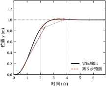
只执行第一步这一点常被误解为“浪费算力”。实际上正是这一步的“反悔权”构成了反馈：模型不准、扰动来了、指令变了，下一拍的计划会自动修正。若把整段最优序列存起来顺序执行（开环），系统就是前馈，误差无处回收。
把 MPC 放在熟悉的坐标系里，可以看得更清楚。
从“换工况”的成本看，三者的差别也很清楚：PID 换工况通常要重新整定增益；LQR 换工况要重算 Riccati 解；MPC 换工况多数只需改参考轨迹与约束边界，权重往往可以复用。反过来，MPC 把复杂度从“整定”转移到了“建模与求解”——这也是它维护画像的由来（§58.11）。
图 58-2 给出 MPC 的闭环结构。与常规反馈回路相比，多了一个虚线框内的“预测模型”：它同时接收当前控制量和测量输出，向优化器提供未来轨迹。优化器是控制器本体，其输出不是“误差的函数”，而是“约束优化问题的解”。
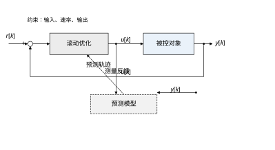
在进入推导之前，先澄清四个流传很广的说法，它们会让后续讨论跑偏。
这四条误解有一个共同根源：把 MPC 当成“更强的 PID”，于是期待它在所有维度都更好。实际上它是一次问题表述方式的改变——把“误差→动作”的映射，换成“约束下的轨迹选择”。一旦这样看，就能理解为什么它在约束宽松时退化为 LQR、在时域过短时退化为短视的前馈、在模型失准时退化为“自信地走错路”。它的强项与弱项都来自同一个地方：模型与优化。
判断自己是否真的理解这一点，可以用一个简单的自测：给定一个新工况，能否在动手之前说出“这个工况下哪条约束会先激活、时域够不够、模型误差会往哪个方向偏”。答得出来，说明用的是 MPC 的思路；答不出来，多半还在用调 PID 的思路调它。
本章按“原理—设计—连续/离散—稳定性—参数—调参—改进—落地”推进。§58.2 推导预测方程与二次规划形式；§58.3 给出七步设计流程；§58.4 讨论连续域提法与采样选择；§58.5 落到离散实现与计算结构；§58.6 讲终端代价、递归可行性与稳定性；§58.7、§58.8 讲参数影响与现场调参；§58.9 介绍 offset-free、显式 MPC、学习增强等改进；§58.10 给出实时预算与投运检查表；§58.11 说明适用边界；§58.12 给出可复现代码。
如果只记一句话：MPC 的价值不在于“更优”，而在于“把约束显式地写进决策”；一旦约束可以忽略，它就该退回 LQR 或 PID。
读者可按需选读：关心现场投运的读 §58.3、§58.8、§58.10；要做算法实现的读 §58.2、§58.5、§58.9；要做稳定性论证的读 §58.6、§58.7。三条路径最后都落在 §58.12 的脚本上，本章所有数字都由该脚本实跑得到。
本节把“预演一遍”写成可计算的数学对象。为了让推导可以手算复核，先限定在线性时不变、约束为凸集的情形；非线性 MPC 的差别只在预测模型与求解器，结构完全一样（§58.9 再提）。
离散状态空间模型取
\boldsymbol{x}_{k+1}=\boldsymbol{A}\boldsymbol{x}_k+\boldsymbol{B}u_k,\qquad y_k=\boldsymbol{C}\boldsymbol{x}_k \tag{58-2}
其中 \boldsymbol{x}_k\in\mathbb{R}^{n}，u_k\in\mathbb{R}（多输入时 u_k\in\mathbb{R}^{m}，下文公式按单输入写，推广只需把 u_k 换成向量、\boldsymbol{B} 换成矩阵）。本章所有结论建立在四条前提上：
第四条最容易被忽略。若 T_s 与对象时间常数同量级，离散模型本身已不能描述拍间行为，再精确的优化也无意义。§58.4 给出选取准则。
四条前提被违反时，症状各不相同，值得事先知道：
本章后续的实测，本质上是在逐个检验这四条前提的敏感度。
四条前提里，最常见也最隐蔽的是第一条。现场的“时不变”往往只是近似：环境温度让摩擦系数变化，负载惯量随工件更换而变，长期运行后丝杠磨损让传动刚度下降。这些变化都慢，单次测试看不出来，但会让模型在几个月内逐渐失准。对策不是把模型做得更复杂，而是建立周期性复核机制：每隔固定时间重做一次开环复核，把误差画在同一张图上，一旦超出允许带就重新辨识。这属于运维流程，而不是算法问题，却决定了 MPC 能否长期可用。
第二条也常被工程约束的写法破坏。看似简单的“模式切换”（例如制冷与制热不能同时开）在数学上是非凸的，直接写成约束会让 QP 失效。正确做法是把模式当作外层调度变量，每种模式内部各解一个凸问题，而不是试图用一个 QP 覆盖所有模式。这条经验在暖通、能源管理里尤其常见。
至于第三、第四条，它们的共同点是“无法靠调参弥补”。状态估计不准，优化器每拍都从错误的起点出发；采样太慢，模型与对象在拍间脱节。遇到这两类症状，先补硬件或改结构，不要在权重上找答案——这也是 §58.8 把“先定前提、再调参数”放在最前面的原因。
把未来 N_p 步的状态堆成列向量
\boldsymbol{X}=\begin{bmatrix}\boldsymbol{x}_1\\ \boldsymbol{x}_2\\ \vdots\\ \boldsymbol{x}_{N_p}\end{bmatrix},\qquad \boldsymbol{U}=\begin{bmatrix}u_0\\ u_1\\ \vdots\\ u_{N_c-1}\end{bmatrix} \tag{58-3}
逐拍代入式 (58-2) 可得
\boldsymbol{X}=\boldsymbol{\Phi}\boldsymbol{x}_0+\boldsymbol{\Gamma}\boldsymbol{U} \tag{58-4}
其中
\boldsymbol{\Phi}=\begin{bmatrix}\boldsymbol{A}\\ \boldsymbol{A}^2\\ \vdots\\ \boldsymbol{A}^{N_p}\end{bmatrix},\qquad \boldsymbol{\Gamma}_{kj}=\sum_{i:\ \min(i,N_c-1)=j}\boldsymbol{A}^{k-1-i}\boldsymbol{B} \tag{58-5}
式 (58-5) 中的 k 从 1 到 N_p，j 从 0 到 N_c-1。第二式的求和号看起来别扭，它表达的是“控制时域内的保持”：前 N_c 拍允许逐拍变化，第 N_c 拍之后保持最后一个值不变，即
u_k=u_{\min(k,\,N_c-1)},\qquad k=0,\dots,N_p-1 \tag{58-6}
这种“前段自由、后段保持”的做法叫移动阻塞（move blocking）。它把决策变量从 N_p 个减到 N_c 个，计算量随 N_c 而非 N_p 增长；代价是牺牲了远端的调节自由度——而远端本来也不确定，牺牲它是划算的。N_c=N_p 时退化为逐拍自由的标准形式。
这些符号值得用一组具体数字校验一次。本章对象在 T_s=0.1 s 下的离散矩阵为 \boldsymbol{A}=[\,[1,\,0.095163],\,[0,\,0.904837]\,]、\boldsymbol{B}=[0.004837,\ 0.095163]^{\mathrm{T}}（前者按行写）。
取 N_p=3、N_c=2，则 \boldsymbol{\Gamma} 按行分三块：
第三行第二块是读图的重点：它等于 0.013893+0.004837，约为 3.87 倍的首拍增益。原因是移动阻塞让 u_1 一直保持到预测末端，它在第 2、3 拍都起作用，累积效果是 \boldsymbol{B}+\boldsymbol{A}\boldsymbol{B}。若不做阻塞（N_c=N_p），这一块只会是 \boldsymbol{A}^2\boldsymbol{B}，u_2 在前一拍不起作用——这正是“控制时域决定未来能拐几次弯”的矩阵解释。
再验一个数量级：设 u_0=u_1=0.5 恒定，三拍（0.3 s）后位置只前进 0.0204 m，速度约 0.130 m/s。这与 §58.1 的结论一致——0.5 的推力在 0.3 s 内只能走两厘米，1 m 的行程从一开始就停不住。
工程上最常用的二次代价为
J=\sum_{k=0}^{N_p-1}\left[(y_k-r)^2q_y+v_k^2q_v+u_k^2r_u\right] +\left(\boldsymbol{x}_{N_p}-\boldsymbol{x}_{\mathrm{ref}}\right)^{\mathrm{T}}\boldsymbol{P}\left(\boldsymbol{x}_{N_p}-\boldsymbol{x}_{\mathrm{ref}}\right) \tag{58-7}
前三项是阶段代价：q_y 罚跟踪误差，q_v 罚速度（对位置伺服而言相当于阻尼），r_u 罚控制能量。第四项是终端代价，\boldsymbol{P} 常取离散代数 Riccati 方程的解（第 55 章），\boldsymbol{x}_{\mathrm{ref}}=[r,\ 0]^{\mathrm{T}} 是目标稳态。
终端项必须写在 \boldsymbol{x}_{N_p}-\boldsymbol{x}_{\mathrm{ref}} 上，而不是 \boldsymbol{x}_{N_p} 上。这不是形式问题：本章脚本最初把终端项误写成 \boldsymbol{x}_{N_p}^{\mathrm{T}}\boldsymbol{P}\boldsymbol{x}_{N_p}，其余设置不变，仿真得到的稳态停在 1.135 m 而不是 1.000 m，跟踪误差被终端项“拽”出一个固定偏差。改回误差形式后偏差消失。凡是终端代价与阶段代价的参考点不一致，都会出现这类静差。
式 (58-7) 可写成矩阵形式。令 \bar{\boldsymbol{Q}} 为按拍堆叠的权重矩阵（末块换成 \boldsymbol{P}），\bar{\boldsymbol{R}}=r_u\boldsymbol{I}_{N_c}，则
J=\left(\boldsymbol{X}-\boldsymbol{X}_{\mathrm{ref}}\right)^{\mathrm{T}}\bar{\boldsymbol{Q}}\left(\boldsymbol{X}-\boldsymbol{X}_{\mathrm{ref}}\right) +\boldsymbol{U}^{\mathrm{T}}\bar{\boldsymbol{R}}\boldsymbol{U} \tag{58-8}
这里的 \bar{\boldsymbol{Q}} 由 q_y\boldsymbol{C}^{\mathrm{T}}\boldsymbol{C}+q_v\boldsymbol{e}_v\boldsymbol{e}_v^{\mathrm{T}} 逐块对角堆成，\boldsymbol{e}_v 是速度选择向量。矩阵写法便于批量计算，标量写法便于调参时判断“改哪一项”。
值得一提的是三个权重的量纲并不相同：q_y 的单位是 1/\mathrm{m}^2，q_v 是 1/(\mathrm{m/s})^2，r_u 是 1/\mathrm{N}^2。直接按“感觉”取 1 或 10，等于让量纲决定权重——位置以毫米计时，q_y 会被放大百万倍，控制量几乎不起作用。正确做法是先按满量程归一化（§58.3 式 58-15），再在这个无量纲空间里调相对大小。
另外，y_k 和 v_k 都来自同一个状态向量，为什么要在代价里分开写？因为二者对应两类不同的工程诉求：前者是“到位精度”，后者是“别冲太快”。写成 q_y、q_v 两项，现场工程师可以分别解释、分别让步；若合成一个 \boldsymbol{Q}=\mathrm{diag}(q_1,q_2)，数学上等价，沟通上却失去了抓手。
三类约束在工程中最常见：
u_{\min}\le u_k\le u_{\max},\qquad \Delta u_{\min}\le u_k-u_{k-1}\le \Delta u_{\max},\qquad y_{\min}\le y_k\le y_{\max} \tag{58-9}
第一类是执行器能力，第二类是执行器寿命与机械冲击，第三类是工艺或安全边界。把它们按拍展开，可统一写成
\boldsymbol{G}\boldsymbol{U}\le \boldsymbol{W}+\boldsymbol{E}\boldsymbol{x}_0 \tag{58-10}
其中 \boldsymbol{W} 含常值上下界与上一拍控制量 u_{-1}，\boldsymbol{E} 来自 \boldsymbol{\Phi}（输出约束依赖初始状态）。式 (58-10) 的右端随 \boldsymbol{x}_0 变化，这正是“状态越界则约束越紧”的数学来源：初始状态恶劣时，可行域会自动收缩，甚至变空。
把三类约束的规模算清楚，有助于判断求解负担。输入幅值约束产生 2N_c 行（上下各一），速率约束也是 2N_c 行，输出约束是 2N_p 行，合计约 4N_c+2N_p 行。本章 N_p=20、N_c=5 时为 60 行，规模很小；若 N_p=200、N_c=50，则到 600 行，密度虽低但约束矩阵的构造本身就会成为开销。
结构上也有规律：输入与速率约束的系数是单位阵与差分阵，与状态无关，可以离线拼好；只有输出约束那部分随 \boldsymbol{x}_0 变化，且只影响右端项。在线阶段真正需要改的只有右端向量，这是热启动能奏效、也是嵌入式实现能做得很快的根本原因。
把速率约束写开看，这个“只改右端”的性质最清楚。\Delta u 约束可写成 \boldsymbol{D}\boldsymbol{U}\le\boldsymbol{d}，其中
\boldsymbol{D}=\begin{bmatrix} 1&0&\cdots&0\\ -1&0&\cdots&0\\ 1&-1&\cdots&0\\ -1&1&\cdots&0\\ &\ddots&&\\ 0&\cdots&1&-1\\ 0&\cdots&-1&1 \end{bmatrix},\qquad \boldsymbol{d}=\begin{bmatrix} u_{-1}+\Delta u_{\max}\\ -u_{-1}-\Delta u_{\min}\\ \Delta u_{\max}\\ -\Delta u_{\min}\\ \vdots \end{bmatrix}
前两行含 u_{-1}，其余行是常数。也就是说，每拍更新约束时只需改右端向量的前两个元素，系数矩阵原封不动。工程实现里通常把这两行作为“边界行”单独存放，避免每拍重建整个矩阵。
输出约束则不同：\boldsymbol{C}\boldsymbol{x}_k\le y_{\max} 展开后，左端含 \boldsymbol{\Gamma} 的对应行、右端含 \boldsymbol{\Phi} 的对应行乘以 \boldsymbol{x}_0。但改变的仍然只是右端，系数矩阵与状态无关。若把输出约束写成上下限对称形式，上下两行共享同一组系数、符号相反，可以合并存储。
一个常被忽略的细节是约束的冗余。相邻两拍的输出约束在时间上相关，某些行可能永远不会先于其他行被触发。冗余行不改变最优解，却会增加求解器的迭代次数。剔除的办法不是凭“对象单调”猜测，而是在标称轨迹与最坏工况下分别统计每行的激活情况，只删掉“远离边界且在所有测试工况下都未激活”的行；只要工况覆盖不全，就宁可保留。删错一行的代价是约束失效，比多算几毫秒严重得多。
把式 (58-4) 代入式 (58-8)，合并同类项，得到标准二次规划
\min_{\boldsymbol{U}}\ \tfrac{1}{2}\boldsymbol{U}^{\mathrm{T}}\boldsymbol{H}\boldsymbol{U}+\boldsymbol{x}_0^{\mathrm{T}}\boldsymbol{F}^{\mathrm{T}}\boldsymbol{U} \quad \text{s.t.}\quad \boldsymbol{G}\boldsymbol{U}\le\boldsymbol{W}+\boldsymbol{E}\boldsymbol{x}_0 \tag{58-11}
\boldsymbol{H}=2\left(\boldsymbol{\Gamma}^{\mathrm{T}}\bar{\boldsymbol{Q}}\boldsymbol{\Gamma}+\bar{\boldsymbol{R}}\right),\qquad \boldsymbol{F}=2\boldsymbol{\Phi}^{\mathrm{T}}\bar{\boldsymbol{Q}}\boldsymbol{\Gamma} \tag{58-12}
\boldsymbol{H} 正定（只要 \bar{\boldsymbol{R}}\succ0），因此问题是严格凸的，局部最优即全局最优，解唯一。这一点决定了 MPC 的可重复性：同一状态、同一参数，任何合格求解器给出的第一步控制量应当一致（差异只在数值容差内）。
求解器分两类：有效集法适合小规模、热启动频繁的场合；内点法适合大规模、约束结构复杂的场合。本章脚本用 OSQP（一阶算子分裂法），在本例规模下单次迭代耗时 0.04–0.14 ms（§58.10 实测）。规模再大时，可改用稀疏 QP 形式（直接以状态为决策变量、保留块三对角结构），而不是继续扩大稠密的 \boldsymbol{H}；那是另一套建模方式，不能与紧缩型混用。
从式 (58-12) 还能读出一个工程事实：\boldsymbol{H} 只与模型、时域、权重有关，与当前状态无关。因此它可以离线算一次、在线反复使用；每拍变化的只有一次项（通过 \boldsymbol{x}_0）与约束右端（通过 \boldsymbol{x}_0、u_{-1}）。这一点决定了 MPC 的在线计算量与“状态在哪个位置”基本无关——同一套参数下，最坏情况的耗时可以由问题规模预先估出，而不是靠实测撞出来。对实时系统，这个性质比“平均算得快”重要得多。
顺带说明 \boldsymbol{H} 的条件数问题。若位置以米、速度以米每秒、控制量以牛计，三者数量级可能相差 10^3 以上，\boldsymbol{H} 的最大与最小特征值之比随之恶化，一阶法收敛变慢、内点法报“解不准确”。这不是求解器的错，是建模时没有归一化。处理办法在 §58.5.5 展开。
在代码里，这一套对应“参数化问题”的写法：\boldsymbol{x}_0 与 u_{-1} 声明为 Parameter，\boldsymbol{H}、\boldsymbol{G} 用常数构造，编译一次后每拍只赋新值。CVXPY 的规范参数程序（DPP）规则要求参数只以仿射方式出现，否则每次求解都会重新做符号化简；本章的约束与代价都满足这一条，因此编译只发生一次。这一点对“每拍 1 ms”的量级影响很大——若每拍重新构造问题，光是解析与规范化就足以吃掉整个周期。
本章默认配置下，\boldsymbol{H} 是 5\times5 稠密阵，\boldsymbol{F} 是 5\times2，约束矩阵约 60\times5。这三个规模都可以打印出来核对：若 \boldsymbol{H} 的行数等于 N_p 而不是 N_c，说明代码误用了稀疏形式与紧缩形式的混合写法，后面所有耗时结论都不再成立。
记式 (58-11) 的最优解为 \boldsymbol{U}^{*}(\boldsymbol{x}_k)，控制器只取第一个分量：
u_k=\kappa(\boldsymbol{x}_k)=\boldsymbol{e}_1^{\mathrm{T}}\boldsymbol{U}^{*}(\boldsymbol{x}_k) \tag{58-13}
闭环系统为
\boldsymbol{x}_{k+1}=\boldsymbol{A}\boldsymbol{x}_k+\boldsymbol{B}\,\kappa(\boldsymbol{x}_k) \tag{58-14}
\kappa(\cdot) 是一个隐式定义的分段仿射函数：它没有解析表达式，必须在线求解；但对固定有效约束集，它可以写成 \kappa(\boldsymbol{x})=\boldsymbol{K}_i\boldsymbol{x}+\boldsymbol{c}_i 的形式。显式 MPC 就是把所有可能的分段预先算出、存成查找表（§58.9）。
为什么不能像 LQR 那样，离线算出一个固定增益 \boldsymbol{K} 就完事？因为约束一旦激活，最优解的“形状”就变了：未饱和时它由 \boldsymbol{H} 与一次项决定，饱和后它被压在边界上，等效增益随之改变。不同状态落在不同的有效约束组合里，就有不同的 \boldsymbol{K}_i。这些区域的数量随状态维数指数增长，所以对高维系统，“离线枚举所有增益”不可行，只能在线求解——这不是实现偷懒，而是组合复杂度的必然。
由此也能理解 MPC 闭环的两个特点。第一，它是非线性系统，哪怕对象与约束都是线性的；因此不能用线性系统的极点、裕度去评价它，稳定性要靠 §58.6 的价值函数论证。第二，它的“增益”随工作点变化：远离约束时接近 LQR，贴近约束时变得“迟钝”——这恰好是想要的，因为此时再大的增益也换不来更快的响应，只会加深饱和。
图 58-3 对比了“第 20 步的预测轨迹”与“随后实际走出的轨迹”。两者在前 10 步几乎重合，之后逐渐分离——分离来自模型误差与离散化误差，而非算法错误。MPC 并不要求预测完全准确，它只要求误差在下一拍被重新观测并纠正。理解这一点，才能理解为什么一个“不太准”的模型也能撑起可用的 MPC。
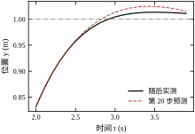
MPC 的设计不是“选一个求解器，把矩阵填进去”。真正决定成败的是前四步：约束有没有列全、模型在工况范围内准不准、时域是否覆盖了对象的主要动态、权重与物理量纲是否匹配。后面的求解与投运，只是把这些前提落实。本节给出七步流程，每一步都写明“交付什么、怎么判合格”。
这七步的顺序不能颠倒，也不能跳。跳过第一步，后面就会用“反复调权重”去补一个本来该由约束表达的需求；跳过第二步，现场会用“模型不准”解释一切异常，最后换成 PID 收场。经验上，一个 MPC 项目七成的时间应当花在前两步，三成花在算法与调试——反过来分配的项目，最后大多退回 PID。
先回答三个问题：被控量是什么、允许偏差多少、哪些量绝对不能越界。工艺给出的“温度稳一点”“别撞到限位”不能直接进优化器，必须转成数值：跟踪误差的允许带、输出的上下限、执行器的物理极限与变化率极限。
这一步的交付物是一张约束清单，至少包含：变量名、物理含义、下限、上限、超限后果、是否可软化。最后两列最关键——“超限后果”决定约束是硬是软，“是否可软化”决定求解器在冲突时是报错还是让步（§58.8 展开）。
以本章场景为例，一张合格的清单应当写成这样：
最后一条最常被写错。把“希望达到的精度”写成硬约束，等于要求控制器在所有工况下都完美，稍有扰动就不可行；写进代价，则是“尽量做到，做不到时退而求其次”。约束表达“绝不能”，代价表达“最好能”，两者混淆是 MPC 项目最常见的设计错误。
约束清单还要回答“这些数从哪来”。三条常见来源各有各的坑：查手册得到的执行器极限往往偏乐观（标称值而非连续工作值），应按降额后的值填；机械限位要靠限位开关的位置反推，并留出制动距离，而不是直接写“行程 1 m”；工艺给出的偏差带通常是统计口径（例如 95% 分位），当成瞬时硬约束会过紧。凡是无法追溯到数据手册、图纸或工艺文件的数值，都应在清单上标“待确认”，不能默认它成立。
清单写完还有一步自检：把每条约束在标称轨迹上的激活率估出来。本章 u_{\max}=0.5 的激活率很高（阶跃起始段几乎全程贴边），\Delta u 的激活率中等，位置上限从不激活。激活率高的约束是性能瓶颈，需要重点核算；激活率为零的约束要么设得过松，要么根本不该写——它们只增加问题规模，不产生任何作用。
工况不止一个时，约束清单要按工况分支。例如设备有“空载/满载”两档，推力上限相同但加速度需求不同，同一组权重在两档下的表现会差很多。工程做法是给每档一组参数、用调度变量切换，而不是用一组参数去覆盖所有工况——后者必然在某些档位上过保守、另一些档位上不可行。
线性 MPC 用状态空间模型。模型来源有三种：机理建模（第 10 章）、辨识（第 15–22 章）、线性化（在工作点附近）。无论哪种，都必须做开环复核：给一段与实际相近的输入序列，比较模型输出与实测输出，误差应小于跟踪允许带的三分之一。若做不到，先回到辨识，不要指望 MPC 的反馈能“补”回来。
模型阶次不必高。位置伺服用二阶、过程对象用一阶加延迟、机电系统用三到五阶，通常足够。高阶模型带来的预测精度提升，往往被参数不确定性与计算量抵消。第 20 章的子空间辨识可以直接给出可用阶次，第 24 章讨论了“过拟合的高阶模型在闭环中反而更差”的现象。
开环复核有四个常见陷阱，值得逐条排除：
复核分三层做，逐层加严。第一层是单点阶跃：在一个工作点附近，比较模型与实测的上升沿，主要看增益与时间常数。第二层是多工况：换三个以上幅值与方向，看参数是否随工作点漂移；若漂移明显，单一线性模型不够，需要分段或增益调度。第三层是闭环回放：把录制的闭环输入序列喂给模型，比较输出轨迹；这一层能暴露开环测试看不到的问题，例如执行器非线性与延迟。
三层都过，模型才算“能用”。只做第一层就上线，现场常见的表现是“小信号很好、大动作就乱”——因为大幅动作进入了非线性区，而模型在那一带从未被验证过。
还有一处容易被忽略：复核的步长要和预测步长一致。很多人拿连续数据做一次整段仿真，拟合度漂亮，就认为模型可用；但 MPC 是每拍用离散模型往前推 N_p 步，误差会逐步累积。正确的做法是按 T_s 离散后做 N_p 步递推，比较第 N_p 步的预测值与实测值。开局误差可以容忍（反馈会纠正），\hat{\boldsymbol{x}}_{N_p} 的误差不能容忍——它决定了优化器对“远处约束”的判断是否可信。工程门槛可以取“末端多步误差不超过允许带的 1 倍”：超过这个量级，即使单步拟合再好，也应缩短时域或换模型，而不是继续调权重。
用零阶保持器把连续模型转成式 (58-2) 的离散形式，采样周期按“闭环响应时间的十分之一到二十分之一”选取。太慢会丢失拍间动态，太快则预测步数膨胀、计算量上升且数值条件变差。
以本章对象为例，闭环上升时间约 1.6 s，取 T_s=0.1 s，一个上升过程有 16 个采样点，既够分辨动态，又让 N_p=20（2 s）覆盖整个过渡过程。若把 T_s 改成 0.01 s，为覆盖同样时长需 N_p=200，计算量增加十倍而信息量几乎不变。
采样还有一笔隐性的账：零阶保持本身带来约 \omega T_s/2 的相位滞后（§58.4.3）。本章剪切频率约 3 rad/s，T_s=0.1 s 时这项滞后为 8.6°；若把 T_s 压到 0.02 s，可降到 1.7°，但 N_p 要从 20 涨到 100 才能覆盖同样时长，计算量增加五倍。用五倍算力换七度相位，通常不划算——除非系统本身的相位裕度已经很低，此时应先考虑提高采样率，而不是继续加大时域。
采样周期还是算力预算的分母。MPC 的单步求解必须在一个 T_s 内完成，若按 50% 的预算规则（§58.3.7），可用于优化的时间是 0.5T_s。T_s 每减半，预算减半，而 N_p 要加倍才能覆盖同样的物理时长，于是对求解器的要求提高了四倍。这条杠杆比“换更快的 CPU”有力得多，也解释了为什么工程上宁可接受 8.6° 的相位滞后，也不轻易把采样周期压到 10 ms 以下。
选 T_s 时还应核对一个下限：一个 T_s 内的控制增量不能超过执行器的实际响应能力。本章 \Delta u 上限 0.1 N/拍，若驱动器本身的电流环带宽只有 20 Hz，那么 0.1 s 一拍尚可跟踪，改成 0.01 s 一拍就变成“算了但执行不出来”。这种情况下缩短采样周期不仅无益，还会让优化器反复给出与实际不符的指令。
预测时域 N_pT_s 应覆盖“从当前状态走到目标附近”所需时间的 1.5–3 倍。太短会看不到远处的约束（§58.5 的无终端代价算例在 N_p=2 时停在 0.395）；太长则远端预测本就不可信，徒增计算。
更严格一点，N_pT_s 还要不小于“纯延迟 + 上升时间”之和。若对象有 d 拍延迟，那么前 d 拍的控制量对输出毫无作用，有效预测长度只有 (N_p-d)T_s。只看 N_p 不看 d，就会在带延迟的对象上重演“时域太短”的所有症状——而这类症状最容易被误诊为权重问题。
控制时域 N_c 一般取 N_p 的四分之一到三分之一，且不小于 3。N_c 太小会让控制量“僵硬”，在需要快速反向的场合跟不上；N_c=N_p 则计算量最大而收益有限。本章默认 N_p=20、N_c=5，即 2 s 预测、0.5 s 自由控制。
N_c 还有一个与延迟直接相关的约束：N_c 应大于延迟拍数。理由很直观——若自由控制段在第 d 拍之前就冻结，优化器实际上无法对延迟之后的那段轨迹做任何安排，等于把一段本可优化的区间交给了“保持”假设，遇到扰动也就没有可用的后续动作。带延迟的对象上，“N_c< 延迟拍数”是比“N_c 取 N_p 的三分之一”更硬的约束。
时域选定后，用一次“截断测试”确认没有选短：把 N_p 逐次加倍，观察指标是否还变。若从 20 加到 40 指标几乎不动，说明 20 已经够；若还在明显改善，说明当前时域截掉了有用的信息。这个测试只需跑几组仿真，比事后在权重上反复试错便宜得多。
权重决定“在可行域内挑哪一个解”。推荐先把三个权重按物理量纲归一化：以允许的最大跟踪误差 e_{\max}、最大速度 v_{\max}、最大控制量 u_{\max} 为基准，取
q_y=\frac{1}{e_{\max}^2},\qquad q_v=\frac{\alpha}{v_{\max}^2},\qquad r_u=\frac{\beta}{u_{\max}^2} \tag{58-15}
其中 \alpha,\beta 是无量纲的相对权重，初值都取 1，再按 §58.8 的方法微调。这样做的目的不是“算得准”，而是让调参有方向：增大 \alpha 相当于加大阻尼，增大 \beta 相当于让控制器“更省力”。
归一化的好处可以用一句话概括：它把“三个数”变成了“两个比例”。按式 (58-15) 取初值后，三项代价在标称工况下的贡献大致同阶，任何一个改动都会立刻在曲线上显示出来；不归一化时，某一项可能大出三个数量级，另外两项怎么调都“听不见”。调参时最怕的不是参数难调，而是某个参数根本没有效果，归一化解决的正是这个问题。
终端代价用离散 Riccati 解（第 55 章），它把“时域之外的代价”折算进来，使短时域也能稳定。若不愿求解 Riccati，也可用终端等式约束 \boldsymbol{x}_{N_p}=\boldsymbol{x}_{\mathrm{ref}}，但可行域会明显缩小，工程上不如终端代价灵活。
这里有一个必须保持一致的地方：求 \boldsymbol{P} 用的 \boldsymbol{Q},\boldsymbol{R} 必须与在线代价里的权重同源。若在线把 q_y 从 10 改成 100，而 \boldsymbol{P} 还是按 q_y=10 算的，终端代价就低估了“继续走下去”的代价，等于在时域末端人为打折，短时域的性能会退回无终端项的水平。正确做法是把权重改动写成“改参数 → 重算 \boldsymbol{P} → 重跑验证”的三步，不允许只改一半。本章脚本的 terminal_cost() 就是按当前权重现算，避免了这种不同步。
权重的初值还有一个更省事的取法：先把它当成 LQR 问题解一次，用得到的 \boldsymbol{Q},\boldsymbol{R} 作为 MPC 的起点。理由是——无约束、时域无限时，两者等价（§58.4.1）；从这个起点出发，加约束只会让轨迹偏离 LQR，而不会因为权重本身选得不合理就已经很差。之后若发现约束激活导致响应变慢，那是约束的账，不该记在权重上。
把控制器放回闭环，至少跑四类工况：标称跟踪、约束激活、模型失配、约束冲突。每一类都要看三样东西：输出曲线、控制量曲线、求解状态。前两样判断性能，第三样判断可行性——若出现 infeasible，说明约束清单里有互相矛盾的要求，必须回到第一步。
本章脚本的四个对应实验是：exp_horizon（标称）、exp_saturation（约束激活）、exp_mismatch（失配）、exp_soft（冲突）。四类都通过，才进入下一步。
每一类的判据要事先写死，否则“看着还行”会变成默认结论：
四类工况跑完，建议把关键指标存成一份基线指纹：IAE、超调、调节时间、峰值控制量、求解耗时中位数与 p95，每项一行。它的作用不是存档，而是让后续每一次参数改动都能被量化判断。没有基线，改完一个参数只能凭“看着顺不顺”下结论；有了基线，指标变化 3% 还是 30% 一目了然。工程上最常出现的争论——“我觉得这样更稳”“我觉得原来更好”——本质都是缺一份可比对的基线。
基线还要注明测试条件：初值、参考幅值、仿真步数、求解器容差。同一组参数在不同初值下的 IAE 可能差出一倍，若条件不写清，两份基线根本无法比较。本章所有指标都对应“零初值、1 m 阶跃、120 步、eps 1e-7”这一组条件，读者复现时应保持一致。
测最坏情况下的单步计算时间，而不是平均值。判据是：最坏计算时间不超过采样周期的 50%，留一半给采样、通信、执行与抖动。若不满足，依次尝试：减小 N_c、用移动阻塞、稀疏化、换更快的求解器或生成显式查表。
“50%”不是随手定的。一个控制周期里，除了求解，还有传感器采样与滤波、通信往返、执行器指令下发、操作系统调度抖动。这些加起来通常占 30%～40%，再留 10%～20% 的余量，剩下给求解的只有一半。若按平均值卡到 90%，偶发的长尾会把周期撑破，表现为“平时很好、偶尔丢一拍”，而丢一拍对闭环的冲击往往比参数不准更大。
测耗时的方法本身也有讲究。桌面操作系统上的单次计时受调度、缓存、降频影响，波动可达数倍，因此要跑足够多次并取分位数：中位数代表常态，p95 代表偶发长尾，最大值用于发现极端情况。只看平均值会同时掩盖两端的真相——平均值漂亮但 p95 超标，现场就会偶发丢拍；平均值超标但最大值可控，则说明只是常数开销大，优化方向完全不同。
投运前还要准备一份降级方案。无论测试做得多充分，现场总会出现意料之外的不可行：传感器跳变导致状态越界、目标值被上级系统写成非法值、执行器反馈丢失。此时控制器不能停在原地等重启。合理的降级顺序是：先放松软约束、再退到“保持上一拍控制量”、最后切到一条保守的 PID 或直接停机。这条链路要在离线阶段就写好并测试过，而不是等故障发生了再临时加。
实时性验收还应包括一次长时拷机：连续运行数小时，观察耗时是否随时间漂移。内存泄漏、日志文件膨胀、求解器内部缓存增长都会让第 10000 拍的耗时明显高于第 100 拍。这类问题在 120 步的仿真里永远暴露不出来，却常常是现场“跑了半天突然卡死”的原因。
图 58-11 把七步串成流程图。注意其中两个回退分支：仿真不达标回到权重/时域，实时预算不够回到计算结构。现场投运后仍需持续监控求解状态与约束激活频次，这部分在 §58.10 展开。
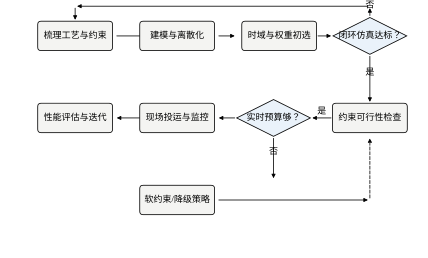
七步的交付物汇总在表 58-1。这张表可直接作为项目评审的检查单：任何一项空缺，都意味着后面的调试会以“反复试参数”的形式把问题补回来。
| 步骤 | 交付物 | 合格判据 |
|---|---|---|
| 1 目标与约束 | 约束清单（含超限后果、可否软化） | 每条约束有量纲、有上下限、有来源 |
| 2 建模 | 状态空间模型 + 开环复核曲线 | 开环误差 < 允许带的三分之一 |
| 3 离散化 | \boldsymbol{A},\boldsymbol{B},\boldsymbol{C} 与 T_s | 一个上升过程 ≥ 10 个采样点 |
| 4 时域 | N_p、N_c | N_pT_s 覆盖过渡过程的 1.5–3 倍 |
| 5 权重 | q_y,q_v,r_u,\boldsymbol{P} | 按式 (58-15) 归一化，量纲一致 |
| 6 闭环验证 | 四类工况的曲线与求解状态 | 无 infeasible，指标达标 |
| 7 实时性 | 最坏单步耗时 | < 采样周期的 50% |
表 58-1 中最容易糊弄的是第 1 步和第 2 步。这两项的合格判据都是“看数据”而不是“看文档”：约束清单要有量纲与来源，模型复核要有曲线与误差，评审时可以直接翻。凡是只写“已确认”而没有数值的，一律按未完成处理。
连续时间提法回答的是“如果计算不受限，最优控制长什么样”，它是理解离散实现的参照系，也是分析工具。真正上机的 MPC 几乎都跑在离散拍上，但连续域的三个结论会直接影响工程决策：无约束时域无限时退化为 LQR、约束使最优解出现在边界、采样与保持会额外吃掉相位。
设对象为
\dot{\boldsymbol{x}}(t)=\boldsymbol{A}_c\boldsymbol{x}(t)+\boldsymbol{B}_c u(t),\qquad y(t)=\boldsymbol{C}_c\boldsymbol{x}(t) \tag{58-16}
在时域 [0,T] 上极小化
J=\int_0^{T}\left[(y-r)^2q_y+v^2q_v+u^2r_u\right]\mathrm{d}t +\left(\boldsymbol{x}(T)-\boldsymbol{x}_{\mathrm{ref}}\right)^{\mathrm{T}}\boldsymbol{P}\left(\boldsymbol{x}(T)-\boldsymbol{x}_{\mathrm{ref}}\right) \tag{58-17}
约束为 u(t)\in\mathcal{U}、\boldsymbol{x}(t)\in\mathcal{X}。与式 (58-7) 相比，求和换成积分，决策变量从一个有限维向量变成一个函数 u(\cdot)。这就是连续 MPC 与离散 MPC 的本质差别：前者是无穷维优化，后者是有限维二次规划。
两种提法的关系可以这样理解：连续版是“问题本身”，离散版是“问题的一个有限维近似”。近似的好坏取决于参数化方式——分段常数假设控制量在拍间不变，等价于零阶保持；分段线性则隐含一阶保持，精度高一阶，但决策变量翻倍。选哪种取决于执行器的实际行为，而不是数学上的方便：若执行器本身就是零阶保持（DAC、PWM 调制的驱动器），再高的参数化也换不来精度，只会增加计算量。
直接在线求解式 (58-17) 需要先把 u(\cdot) 参数化（分段常数、分段线性或多项式），参数化之后又回到有限维问题，与离散 MPC 殊途同归。因此连续提法的主要价值不在实现，而在分析：
因此，工程上正确的顺序是：先在连续域把物理关系、量纲、约束边界想清楚，再离散化实现；而不是直接对着矩阵调参。
约束起作用时，解的结构值得多看一眼。以单输入为例，最优解由切换函数决定：切换函数为正时取上界，为负时取下界，为零时停在中间（奇异弧）。这种“贴边”行为不是数值误差，而是最优性的体现——在边界上，任何偏离都会让某一项代价变大。PID 无法复制这种结构，因为它没有“边界”的概念：饱和只是执行器的物理限制，而不是控制器主动做出的选择。MPC 的限幅是算出来的，PID 的限幅是被迫的，二者的区别在接近边界时最明显。
连续最优控制的正规工具是 Pontryagin 极小值原理：构造哈密顿函数 H=L+\boldsymbol{\lambda}^{\mathrm{T}}f，最优控制使 H 逐点最小，协态 \boldsymbol{\lambda} 由 \dot{\boldsymbol{\lambda}}=-\partial H/\partial\boldsymbol{x} 反向积分，终端条件由终端代价给出。对线性二次问题，这套条件可化成 Riccati 方程；对含输入约束的问题，它给出 bang-bang 结构。理论上很完整，但它要求解一个两点边值问题，且状态约束会带来更复杂的互补条件——能写出条件不等于能算出解，这正是工程上不直接在线求解连续最优控制的原因。
还有一个结构性事实：约束越接近“硬”，最优解越倾向于停在边界上，控制量的变化越不平滑。这会让执行器承受更多冲击，也会让数值求解对约束边界的精度更敏感。工程上常故意把某些约束软化一点点（例如允许 1% 的越界），就是用一点最优性换取解的光滑性与可解性。这不是妥协，而是把“数学模型的最优”换算成“物理系统的最优”。
这也解释了为什么调参经验在 MPC 上不好迁移。PID 的增益调大，响应变快、超调变大，关系单调；MPC 里把 q_y 调大，在远离约束时响应变快，一旦控制量贴住限幅就再难改善，甚至因为反复饱和而变慢。判断依据不能只看一条曲线，要看约束是否被激活。
离散化用零阶保持器（第 4 章）：
\boldsymbol{A}=e^{\boldsymbol{A}_cT_s},\qquad \boldsymbol{B}=\int_0^{T_s}e^{\boldsymbol{A}_c\tau}\mathrm{d}\tau\,\boldsymbol{B}_c \tag{58-18}
零阶保持本身引入约半个采样周期的等效延迟，其相位滞后为
\varphi_{\mathrm{ZOH}}\approx-\omega\frac{T_s}{2} \tag{58-19}
在剪切频率 \omega_c=3 rad/s、T_s=0.1 s 时，这项滞后约 0.15 rad，即 8.6°。它不大，但也不是零：若系统原本相位裕度只有 30°，这 8.6° 就占去近三成。第 14 章的抗混叠滤波器还会再叠加相位，二者必须一起核算。
离散化是否可信，有一个几分钟就能做完的检验：把 ZOH 模型与精细步长（例如 T_s/20）的高阶仿真放在同一阶跃输入下对比，看前几个采样点是否重合。若第一拍内就明显偏离，说明 T_s 相对对象动态太大；若只在长尾处偏，通常是模型阶次不足或存在未建模延迟。这个检验能提前消掉大部分“模型不准”的争议——争议往往来自没做这一步，而不是模型本身有多差。
本章对象取 T_s=0.1 s，闭环上升时间 1.6 s，采样比约 16:1；这是“够用且不过度”的典型取值。把 T_s 减到 0.02 s 会把相位滞后降到 1.7°，但 N_p 需从 20 增到 100 才能覆盖同样时长，计算量增加五倍，收益只有几度相位。
图 58-4 给出三组对照：无约束、仅输入限幅、输入加速率限幅。三者用的是同一个预测模型与同一组权重，差别只在约束集。实测指标列在表 58-2。
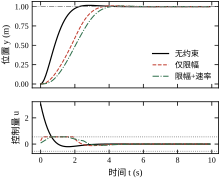
| 约束设置 | 上升时间 (s) | 调节时间 (s) | 峰值控制量 | 控制量总变差 |
|---|---|---|---|---|
| 无约束 | 1.339 | 2.100 | 3.05 | 3.46 |
| 仅输入限幅 0.55 | 2.097 | 3.400 | 0.55 | 1.09 |
| 限幅 + 速率 0.08/步 | 2.245 | 3.800 | 0.55 | 1.22 |
这张表说明两件事。第一，约束不是“稍微牺牲一点性能”：把峰值推力从 3.05 压到 0.55，上升时间增加 57%，调节时间增加 62%。第二，速率限幅的代价比幅值限幅小得多（上升时间只再增 7%），但它换来的是执行器寿命与机械冲击的改善，现场往往更看重后者。
如果只看连续域的 LQR 设计，这三行会是同一行——LQR 不知道 0.55 的存在。MPC 的第一个不可替代之处就在这里：它把“做不到”变成优化问题的一部分，而不是等执行器饱和后再由抗饱和逻辑补救。
还要注意，这三行不是“三种控制器”，而是同一个控制器在三组约束下的表现：权重、时域、模型全都没变，唯一变的是可行域。这提醒我们，现场抱怨“MPC 响应慢”时，应先看约束，再看权重——很多时候慢不是调出来的，而是执行器就只有这么大。推力上限放宽一倍，响应自然会快，前提是机械与电气允许。约束决定可达性能的上限，权重只决定在这个上限内怎么分配。
速率约束的代价之所以远小于幅值约束，可以从“它限制了谁”来理解。幅值约束限制的是加速度的“高度”，直接影响能否在给定距离内完成加减速，改变的是可达集本身；速率约束限制的是控制量变化的“斜率”，只影响轨迹的平滑程度，不改变稳态可达点。本章的阶跃任务里，真正吃紧的是“推力够不够”，而不是“推力能不能瞬间改变”，所以把 \Delta u 从 0.25 收到 0.08 只让上升时间多 7%。若换成频繁正反向的跟踪任务，速率约束会变成主要瓶颈——同一条约束的代价，取决于任务的时间尺度，不能脱离工况谈松紧。
即便最终跑离散算法，连续域的物理事实仍会以三种方式影响实现：
三个细节的共同点是：它们都属于“连续世界的残余”，无法在离散模型里自动体现，必须在工程实现时显式补偿。
这三条也解释了为什么“仿真很好、现场不行”经常成对出现：仿真里没有计算延迟、没有抖动、执行器是理想保持器。把这三项补进仿真，曲线的差别往往比换算法更大。第 24 章“数字孪生”的一部分工作，就是把这些非理想因素显式建模，而不是期待控制器自动适应。
延迟要按“全链路”记账，而不是只看控制器那一段。一个完整的回路至少有：传感器采样与滤波（0.5～2 拍）、总线传输（0.1～1 拍）、控制器计算（0.2～0.5 拍）、执行器指令更新（0.5～1 拍）。这些加起来常常是 2～4 拍，而 §58.6 的实测表明，5 拍未建模延迟就足以让超调从 1.35% 涨到 21%。延迟不会因为分段而被摊薄，它按总和起作用。工程做法是先测总延迟，再把总延迟写进预测模型，而不是逐段优化、最后加起来仍然超标。
上机运行的是离散版本。本节把 §58.2 的矩阵写开，解释三件事：为什么预测矩阵是下三角结构、移动阻塞怎样改变问题规模、时域长度在实测中到底带来多大差别。
以 N_p=3、N_c=3 为例，把式 (58-4) 展开：
\begin{bmatrix}\boldsymbol{x}_1\\ \boldsymbol{x}_2\\ \boldsymbol{x}_3\end{bmatrix} =\begin{bmatrix}\boldsymbol{A}\\ \boldsymbol{A}^2\\ \boldsymbol{A}^3\end{bmatrix}\boldsymbol{x}_0 +\begin{bmatrix}\boldsymbol{B} & \boldsymbol{0} & \boldsymbol{0}\\ \boldsymbol{A}\boldsymbol{B} & \boldsymbol{B} & \boldsymbol{0}\\ \boldsymbol{A}^2\boldsymbol{B} & \boldsymbol{A}\boldsymbol{B} & \boldsymbol{B}\end{bmatrix} \begin{bmatrix}u_0\\ u_1\\ u_2\end{bmatrix} \tag{58-20}
\boldsymbol{\Gamma} 是分块下三角 Toeplitz 矩阵：第 k 行第 j 列的非零块只出现在 j<k，因为“未来的控制不能影响过去的状态”。这个因果结构决定了 MPC 的预测无法被“事后修正”：一旦某一步状态已经越过约束边界，只能靠后续控制挽回，而不能改变历史。
块下三角还带来一个计算上的好处：\boldsymbol{\Gamma}^{\mathrm{T}}\bar{\boldsymbol{Q}}\boldsymbol{\Gamma} 可按块递推计算，不必显式构造 \boldsymbol{\Gamma} 再相乘。当 N_p 达到几百时，这一点的差别是数量级的。
从结构还能读出一个容易误解的推论。紧缩型的 \boldsymbol{H} 是 N_c\times N_c 的稠密矩阵——块下三角相乘后不再稀疏；它的规模只由控制时域决定，与 N_p 无关。§58.10 的实测中 N_c 固定为 5，\boldsymbol{H} 始终是 5\times5，N_p 增大只影响 \boldsymbol{\Phi}、\boldsymbol{\Gamma} 与约束行数，耗时因此近似线性增长（0.047 ms 到 0.135 ms）。这提示一个实践要点：想控制计算量，先控制 N_c；N_p 的影响主要在矩阵构造与约束规模上。
表 58-3 给出 N_p=20 时改变 N_c 的实测结果。所有工况使用同一组权重与约束。
| 控制时域 N_c | IAE | 调节时间 (s) | 控制量总变差 | 单步中位数 (ms) |
|---|---|---|---|---|
| 2 | 1.691 | 3.300 | 1.86 | 1.06 |
| 3 | 1.529 | 2.900 | 2.05 | 1.07 |
| 5 | 1.458 | 2.700 | 2.09 | 1.07 |
| 10 | 1.468 | 2.800 | 2.05 | 1.15 |
| 20 | 1.471 | 2.800 | 2.04 | 1.22 |
三个结论。第一，N_c 从 2 增到 5，调节时间从 3.3 s 降到 2.7 s，改善明显；再从 5 增到 20，指标几乎不变（1.458 对 1.471，差异在噪声量级）。第二，N_c 太小会让控制“僵硬”：两段式控制无法在接近目标时精细反向，控制量总变差反而更小但跟踪更差。第三，计算耗时随 N_c 增长缓慢（1.06 ms 到 1.22 ms），因为本例规模小、Python 开销占主导；在嵌入式实现中，N_c 对耗时的影响会显著得多。
工程取值建议：N_c=\lceil N_p/4\rceil，且不小于 3。这既保留了必要的调节自由度，又避免了无谓的计算。
移动阻塞还有一个不太直观的好处：它降低了问题的“有效自由度”，让解更稳定。N_c=N_p 时，相邻两拍的决策变量高度可替代，最优解在数值上可能有多个近似等价的候选，表现为控制量轻微抖动；阻塞把后段合并后，这种“平局”减少，解更确定。代价是远端不能精细调节——但对本章这类二阶对象，远端本来就不需要精细调节。
阻塞模式要与执行器能力匹配。若执行器更新率低于采样率（例如每两拍才更新一次指令），却把阻塞设成逐拍自由，优化器会算出执行器根本执行不了的序列；反之，执行器很快而阻塞很粗，则浪费了能力。阻塞的粒度应等于执行器实际能分辨的时间粒度，这条比“取 N_p 的四分之一”更本质。
阻塞段的长度不必均匀。常见做法是前密后疏：前几步逐拍自由，后面每两拍或三拍一段。理由是近端需要精细调节，远端只需大致方向；这比均匀阻塞更省变量，也更符合“远端本来就不确定”的事实。
段数还与对象阶次有关。二阶对象通常 3～5 段就够；含长延迟或柔性模态时，需要更多段才能表达“先等延迟过去再动作”的计划。判断方法很直接：把 N_c 逐步加到指标不再改善为止，表 58-3 中 N_c=5 就是本章的拐点。不要用“段数越多越精确”的直觉去定 N_c，多出来的段只是把同样的动作拆细，并不增加信息。
MPC 每拍求解的问题只有右端项（\boldsymbol{x}_0、u_{-1}）变化，矩阵 \boldsymbol{H}、\boldsymbol{G} 不变。利用这一点可以做热启动：把上一拍的最优解平移一位作为初值，求解器通常两三步迭代就收敛。
热启动带来一个副作用：求解器可能返回 optimal_inaccurate 或在上一次的解附近停滞。工程上必须逐拍检查求解状态，而不是只看曲线好不好看。本章脚本把每拍的 status 存在 res["status"] 里，出现非最优时统计步数。§58.8 的软约束实验正是靠这个统计发现“硬约束从第 0 步起就不可行”。
热启动也有失效的时候。相邻两拍的激活约束集差别很大时（例如刚撞上输出上限又离开），上一拍的解可能落在当前可行域之外，求解器要先“爬”回来，迭代次数反而比冷启动更多。判断方法看迭代次数与求解时间：若某些拍明显变慢，且集中在约束切换处，就应改成条件热启动——只在约束集未变时复用。
另一条实践经验是把初值投影到当前可行域再送入求解器。这段代码只有几行，却能避免大量无效迭代，对嵌入式实现尤其值得。它和 §58.8 的软约束并不重复：投影保证“起点合法”，软化保证“问题有解”，两者解决的是不同层面的问题。
图 58-5 给出两组曲线：左图带 Riccati 终端代价，右图不带。同一组 N_p 取值，差别只在终端项。
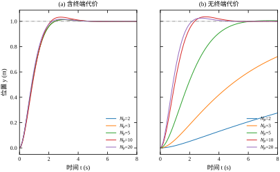
数据列在表 58-4。带终端代价时，N_p=2 与 N_p=20 的 IAE 分别为 0.999 与 0.963，几乎一致——终端项把“时域之外”折算进来了，短时域也能得到接近无限时域的行为。不带终端代价时，N_p=2 的末端值只有 0.395，N_p=3 为 0.865，N_p\ge5 才回到 1.000。原因很直观：优化器只看两步，认为“再往前走收益抵不上控制代价”，于是提前收手。
| N_p | 有终端代价 IAE | 有终端代价末值 | 无终端代价 IAE | 无终端代价末值 |
|---|---|---|---|---|
| 2 | 0.999 | 1.000 | 9.621 | 0.395 |
| 3 | 0.999 | 1.000 | 5.722 | 0.865 |
| 5 | 0.999 | 1.000 | 2.175 | 1.000 |
| 10 | 1.033 | 1.000 | 1.142 | 1.000 |
| 20 | 0.963 | 1.000 | 0.994 | 1.000 |
表 58-4 还暴露一个细节：带终端代价时 N_p=10 的 IAE（1.033）反而略大于 N_p=2（0.999）。这不是“时域越长越差”，而是约束与离散化共同作用的结果：该工况下控制量已达限幅 1.0，轨迹贴着约束走，IAE 的差异主要来自饱和段的长短。在约束激活的工况下，时域长度不再是主导因素，约束才是。
把两栏并排看，还有一个更实用的结论：要达到 0.99 量级的 IAE，带终端代价只需 N_p=2，不带则要 N_p=20。终端项把“时域长度”换成了“一次离线矩阵求解”，这是本章最划算的一笔替换——多花几行代码，省掉十倍的在线规模。
离散 QP 的数值质量取决于三件事：
eps_abs、eps_rel 放宽一个量级，迭代次数通常减半。精度过低会让控制量出现小幅抖动，表现为执行器“嗡嗡响”。归一化的具体做法：取位置满量程 p_{\max}、速度满量程 v_{\max}、推力满量程 u_{\max}，令 \tilde p=p/p_{\max}、\tilde v=v/v_{\max}、\tilde u=u/u_{\max}，则模型变为 \tilde{\boldsymbol{A}}=\boldsymbol{S}_x^{-1}\boldsymbol{A}\boldsymbol{S}_x、\tilde{\boldsymbol{B}}=\boldsymbol{S}_x^{-1}\boldsymbol{B}S_u，其中 \boldsymbol{S}_x=\mathrm{diag}(p_{\max},v_{\max})、S_u=u_{\max}。权重同步折算为 \tilde q_y=q_yp_{\max}^2、\tilde q_v=q_vv_{\max}^2、\tilde r_u=r_uu_{\max}^2，代价值不变。整套变换只在构造时做一次，在线阶段不必反复。
这三条都属于“实现层”的问题，但在现场表现得很像“算法不对”。排查顺序应是：先看求解状态与迭代次数，再看约束是否冗余，最后才怀疑模型与权重。
本章默认配置下实测 \boldsymbol{H} 的条件数约 145（特征值从 2.0 到 291），属于健康范围，所以 OSQP 能在几十次迭代内收敛。q_y 取 10^3 时升到约 4.8\times10^3，取 10^4 时升到约 3.7\times10^4——条件数随权重差异近似线性恶化，迭代次数与“非最优”步数也随之增加。判断方法很简单：在初始化时打印 numpy.linalg.cond(H)，超过 10^6 就必须先归一化，再去调任何参数。
MPC 的稳定性分析比经典反馈难一层：控制器本身是一个优化问题，闭环没有显式表达式，算不出极点，也画不出根轨迹。工程上真正需要回答的是三个问题——滚动优化会不会把系统弄发散、性能上限由谁决定、模型不准时还剩多少余量。
三个问题可以先给出轮廓：滚动优化本身不保证稳定，必须补上“时域之外”的信息；性能上限由约束与物理决定，权重只能在其内部分配；失配余量对参数偏差较宽、对未建模延迟很窄。下面逐条展开，并在本章对象上给出实测。
先看一个容易踩的坑。“每一拍都求到了最优解”与“闭环稳定”是两件不同的事：前者只说明当前这个有限时域问题可行且有解，后者要求整条轨迹收敛。
反例就在表 58-4 里。N_p=2、不带终端代价时，优化器每一拍都在自己的窗口内做到了最优，但每一拍都判断“再往前走一步的收益抵不上控制代价”，于是提前收手，最终停在 0.395 m。每一拍都“对”，整条轨迹却停在错误的位置。这种失败不表现为发散，而表现为“停在半路”，最容易被误判成“权重没调好”。
更严重的情形是真正发散。若对象含积分环节、代价又重度惩罚控制量，短时域优化器会持续给出偏小的控制量，误差累积；下一拍窗口仍只看眼前，仍给出偏小的量，误差单调增长。此时每拍的求解状态都是 optimal，看曲线却已经飞了。
两种失败在日志上可以区分。停在半路时，控制量会衰减到接近零、误差保持常量、J^{*} 逐拍趋近一个非零常数；真正发散时，控制量持续偏小但不为零、误差单调增大、J^{*} 也持续上升。前者是“优化目标写错了”，后者是“闭环根本不稳定”。混为一谈会导致完全错误的处置：前者加终端项即可，后者要检查对象是否本身不稳定、时域是否短于必要长度。
因此“每拍有解”只是必要条件。要保证闭环稳定，必须给优化问题补上“时域之外怎么办”的信息。
用价值函数做 Lyapunov 函数是标准路线，但它成立的前提是 J^{*}_k 单调。窗口每拍右移，被优化的目标函数其实在变——第 k 拍与第 k+1 拍对的不是同一个和式，无法逐项比较，单调性就断了。补上终端项之后，“补出来的序列”把两个和式接上，单调性才重新成立。终端代价不是调优选项，而是稳定性证明的支点：删掉它，证明的第一步就塌了。
补信息有三种做法，强度依次减弱：
工程上最常用第二种，因为这笔账可以离线算清。取 \boldsymbol{P} 为离散代数 Riccati 方程的解：
\boldsymbol{P}=\boldsymbol{Q}+\boldsymbol{A}^{\mathrm{T}}\boldsymbol{P}\boldsymbol{A} -\boldsymbol{A}^{\mathrm{T}}\boldsymbol{P}\boldsymbol{B} \left(\boldsymbol{R}+\boldsymbol{B}^{\mathrm{T}}\boldsymbol{P}\boldsymbol{B}\right)^{-1} \boldsymbol{B}^{\mathrm{T}}\boldsymbol{P}\boldsymbol{A} \tag{58-21}
它满足
\boldsymbol{x}_{N_p}^{\mathrm{T}}\boldsymbol{P}\boldsymbol{x}_{N_p} =\min_{u_{N_p},u_{N_p+1},\dots}\ \sum_{k=N_p}^{\infty} \left(\boldsymbol{x}_k^{\mathrm{T}}\boldsymbol{Q}\boldsymbol{x}_k+u_k^{\mathrm{T}}\boldsymbol{R}u_k\right) \tag{58-22}
也就是说，终端代价恰好等于“从这里开始用 LQR 走到无穷远”的总代价。把它加进有限时域目标，等于把 N_p 之后那一段截断误差一次性补上。这正是表 58-4 中 N_p=2 也能落到 1.000 的原因。
有了终端代价，稳定性可以三步证完：
J^{*}_{k+1}\le J^{*}_{k} -\left(\boldsymbol{x}_k^{\mathrm{T}}\boldsymbol{Q}\boldsymbol{x}_k+u_k^{\mathrm{T}}\boldsymbol{R}u_k\right) \tag{58-23}
三步里最要紧的是第 1 步：终端集必须在 LQR 律下不变，且整体落在约束集内部。若终端集压到了输入限幅的边界，“补出来的序列”就可能违约，递归可行性断裂，证明失效。这一点在实现时最常被忽略——\boldsymbol{P} 是从无约束 LQR 算来的，它默认“终端附近不饱和”。
终端集的具体做法：取 \Omega_\alpha=\{\boldsymbol{x}:\boldsymbol{x}^{\mathrm{T}}\boldsymbol{P}\boldsymbol{x}\le\alpha\}，选最大的 \alpha，使 \Omega_\alpha 内任意状态在 LQR 律下的控制量与速率都不越界。\alpha 可以在边界上采样求得，也可以解一个小优化。它一旦定下，就应纳入可行性监视：若某拍预测末端落在 \Omega_\alpha 之外，说明剩余时域不足以安全收尾，应提前减速或报警。
工程上很多人只用终端代价、不设终端集，等价于取 \alpha=\infty。约束宽松时这个近似成立；约束经常激活时（例如本章 u_{\max}=1.0 经常贴边），就必须校验，否则稳定性证明里的递归可行性只是一纸空文。
把三步证明摊开，可以看到它其实依赖四个前提，缺一个就断链：
| 前提 | 数学要求 | 违反后的症状 |
|---|---|---|
| 初始可行 | 第 0 拍问题可行 | 第一拍就 infeasible，控制器无法启动 |
| 终端集不变 | LQR 律把 \Omega_\alpha 映回自身 | 补出来的序列越界，第二拍不可行 |
| 终端集在约束内 | \Omega_\alpha 上 u 与 \Delta u 均不越界 | 证明只在“终端附近不饱和”的假设下成立 |
| 模型准确 | 预测模型与实际对象一致 | 补出来的序列在实际对象上不成立 |
第一、二、三条是数学条件，第四条是物理条件。教科书上的稳定性定理默认四条全满足，而工程现场最常破的是第四条——它不在优化问题里，检查求解器状态永远看不出来。
\alpha=\infty 到底丢掉了什么。 不设终端集时，第 1 步“丢掉首元素、末尾补 LQR 律”这个构造依然可以做，但补出来的序列只保证代价有限，不保证约束满足。若终端附近控制量已经贴住限幅，补上的 LQR 律会要求更大的控制量，序列违约，递归可行性断裂。此时现象往往不是立刻发散，而是“约束边缘反复横跳”：某拍可行、下一拍不可行、再下一拍因为状态被拉回又可行。日志里表现为 infeasible 偶发，曲线表现为小幅抖动。这类问题最难查，因为它不像持续不可行那样显眼。
一个低成本的校验办法：在标称轨迹上记录每拍预测末端的 \boldsymbol{x}_{N_p}^{\mathrm{T}}\boldsymbol{P}\boldsymbol{x}_{N_p}，画出它随时间的曲线。若这条曲线在接近目标时单调下降且始终很小，说明终端项在工作；若它在目标附近反而抬起，说明优化器正把状态往终端集外推，\alpha=\infty 的近似已经失效。这个量在代码里只需一行，却比盯着位置曲线更早暴露问题。
非线性与时变对象。 上面的证明建立在“线性、时不变”两个假设上。对象非线性时，\boldsymbol{x}_{k+1}=\boldsymbol{A}\boldsymbol{x}_k+\boldsymbol{B}u_k 只是局部近似，补出来的序列在真实对象上不一定可行，第一步就断。工程上有三条应对：在工作点附近线性化并限制状态偏离（增益调度 MPC）；用非线性模型做预测（NMPC，每步解非凸问题，可行性与求解时间都更难保证）；或者用 tube MPC——把不确定性显式写成有界扰动，在线只优化标称轨迹，再用一个辅助反馈把实际状态约束在标称轨迹周围的“管子”里。
tube MPC 的思路值得记住，因为它把“证明”和“鲁棒”两件事分开了：标称问题负责性能，辅助反馈负责把实际状态拉回管子。代价是管子半径必须离线算好，且要保守——管子越粗，可行域越小。对本章这种确定性仿真，tube 没有必要；但对存在执行器死区、摩擦突变或负载变化的真实伺服，它是从“能跑”到“敢投运”的关键一步。
最后要强调：稳定性证明回答的是“会不会发散”，不回答“多快、多准”。后者由约束与权重决定，是下一节的内容。把两件事混在一起谈，就会出现“证了稳定所以性能应该好”的错误期待。
把上述结论落到本章对象上。图 58-6 是 N_p=3 的相平面轨迹。
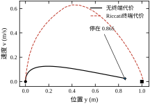
两条轨迹都从原点出发，目标标在 (1,0) 处。无终端代价的曲线在速度降到零时位置只有 0.865，之后不再移动——它已经“收敛”了，只是收敛到了错误的地方。带终端代价的曲线则一路推进到目标。
读相平面图时注意两点。第一，无终端代价的轨迹并不是发散，它收敛到了一个错误的平衡点：速度为零、位置 0.865，此时再多走一步的收益恰好抵不上控制代价，优化器没有动力继续。第二，带终端代价的轨迹在接近目标时速度曲线更陡——终端项告诉它“到了之后还要付代价”，所以愿意在末端多花一点推力。两点合起来说明：短时域失败的本质不是“算不准”，而是目标函数写错了，把“到终点就结束”错当成了“任务完成”。
对照表 58-4，N_p=3 时两者差别是：IAE 5.722 对 1.471，调节时间 11.3 s 对 2.8 s。付出的代价几乎为零：终端项只是一个二次型，离线算一次 \boldsymbol{P}，在线求解规模不变。实测单步耗时在两种设置下都是 1.07 ms，差异落在测量噪声里。
因此工程上的默认配置应当是“短时域 + 终端代价”，而不是“长时域 + 无终端项”。前者把计算量花在刀刃上；后者要靠 N_p\ge5 才自然收敛，而时域越长，最坏情况下的求解时间越高（§58.10）。
现场识别“停在半路”有一个比看位置曲线更快的办法：同时画出速度。正常收敛时，速度会在到达目标附近穿过零并小幅反向；停在半路时，速度单调衰减到零后就再不动了，控制量随之缓慢衰减到接近零（本章实测末值为 0.02），而不是维持一个足以继续推进的力——优化器认为“再动不划算”，于是主动放弃。速度曲线出现这种“耗尽式”收敛，基本可以确诊为终端项缺失或时域过短，而不是权重问题。两种原因的区分也简单：加终端项后若立刻到位，是终端项的问题；仍不到位，才是时域太短。
真实对象永远与预测模型有差别。图 58-7 给出四组工况：标称、时间常数偏大 30%、纯延迟 5 步（0.5 s）、增益偏低 30% 再叠加 2 步延迟。
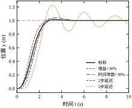
四组工况的指标列在表 58-5。所有工况使用同一控制器（N_p=20、N_c=5、终端代价齐全），只改被控对象的参数。
| 工况 | IAE | 超调量 (%) | 调节时间 (s) |
|---|---|---|---|
| 标称 | 1.458 | 1.35 | 2.700 |
| 时间常数 +30% | 1.606 | 4.14 | 4.400 |
| 纯延迟 5 步 | 2.575 | 21.36 | 13.600 |
| 增益 −30% + 2 步延迟 | 1.915 | 3.75 | 4.500 |
三条读数：
结论很明确：上线前必须先测延迟，并把延迟显式写进预测模型，不能指望反馈去吸收它。做法是状态增广，把最近 d 拍的控制量纳入状态：
\boldsymbol{x}^{a}_{k+1}= \begin{bmatrix}\boldsymbol{A} & \boldsymbol{B}_{d}\\ \boldsymbol{0} & \boldsymbol{S}\end{bmatrix}\boldsymbol{x}^{a}_k +\begin{bmatrix}\boldsymbol{0}\\ \boldsymbol{e}_1\end{bmatrix}u_k \tag{58-24}
其中 \boldsymbol{S} 是移位寄存器，\boldsymbol{B}_{d}=[\boldsymbol{0},\dots,\boldsymbol{0},\boldsymbol{B}]，\boldsymbol{e}_1=[1,0,\dots,0]^{\mathrm{T}}。这样第 k 拍优化时“看到”的仍是 d 拍之前的控制效果，与实际执行一致。代价是状态维数增加 d 倍，N_p 不变时 \boldsymbol{\Gamma} 的规模也随之上升，需要在延迟精度与计算量之间取平衡。
经验门槛：纯延迟超过闭环上升时间的 20%，就必须显式建模；超过 50%，普通 MPC 很难把超调压住。本章 5 步延迟是 0.5 s，占上升时间 1.6 s 的 31%，正落在“必须建模”的区间——这也解释了为什么这一组的指标会突然恶化，而 ±30% 的参数偏差只是温和变差。
若不便增广状态，还有两条退路：用 Smith 预估器把延迟移出回路，或在时间戳上做预测对齐（测量值带上采样时刻，预测时按实际时刻推演）。前者要求模型准确，后者要求时钟同步；两者都不如显式增广稳妥，但在改造老设备时常常更现实。
延迟怎么测，也有讲究。最直接的办法是给一个短脉冲，记录“指令下发时刻”到“输出开始变化时刻”的差值；但输出变化往往有死区与噪声，起点难判。更稳的做法是互相关：把输入序列与输出序列做互相关，峰值位置即延迟的估计，分辨率受采样周期限制。若延迟小于一个采样周期，两种方法都测不准，此时应按最坏情况取一整拍，宁可保守。延迟测不准的代价是不对称的：估小了，闭环超调；估大了，只是保守一点。工程上永远向上取整。
失配实验的方法论也值得记一笔：一次只改一个参数，否则无法归因。本章第四组刻意叠加两项，用来检验“小误差叠加”是否比“大误差单项”更糟——结果是 1.915 对 2.575，说明延迟的主导性远大于增益偏差。
最后回到性能。表 58-2 已经显示：约束一收紧，上升时间就从 1.339 s 变成 2.245 s。这不是权重造成的——把 q_y 加倍、r_u 减半，曲线几乎不动，因为控制量已经贴在限幅上，再大的权重也只能让它贴着。
对本章对象，制动力给定时，最小制动距离与最小制动时间有解析下界。速度方程 \dot v=-v+u，取 u=-u_{\max} 得 v(t)=(v_0+u_{\max})e^{-t}-u_{\max}，于是
t_{\min}=\ln\!\left(1+\frac{v_0}{u_{\max}}\right),\qquad s_{\min}=v_0-u_{\max}t_{\min} \tag{58-25}
取 v_0=2 m/s、u_{\max}=0.5，得 t_{\min}=\ln 5\approx1.61 s、s_{\min}\approx1.195 m——与 §58.1.1 的推演一致。
这里有一个容易套错公式的地方。若对象是纯双积分器（输入直接等于加速度），同样 v_0=2、a_{\max}=0.5 会得到 s_{\min}=v_0^2/(2a_{\max})=4 m；本章对象的一阶速度滞后在高速度段提供了额外减速（v=2 时总减速度为 2.5 m/s^2），实际下界只有 1.195 m。制动距离必须按对象算，套用双积分公式会把可行性判断放大四倍，进而把本来只差 0.2 m 的工况误判成“完全不可达”。
§58.1 的场景把安全行程设成 1 m，比 1.195 m 少约 0.2 m，因此物理上停不住——MPC 也不会变魔术。它能做的是尽早识别“目标不可达”，并把冲突以可解释的方式暴露出来（软约束、优先级、报警），而不是像 PID 那样一路顶到限幅、最后撞上去。本章软约束实测峰值 1.272 m，比理论下界多出的 0.077 m 正是速率限幅的代价：反推力需要 5 拍才能拉满，这 5 拍内减速能力不足。
从可达集的角度看，约束收紧等价于把“从当前状态出发能到达的集合”缩小。推力越小、行程越短，可达集越窄，能实现的调节时间下界越高。这解释了为什么约束紧时加权重没有用：权重只能在可达集内部挑点，不能把集合变大。工程上的性能三角是推力（功率）、行程（时间）、带宽，三者不可能同时最优；MPC 的作用是在给定两边的前提下，把第三边用到极限。
所以评价一个 MPC 控制器，正确的顺序是：先看约束是否合理、是否被激活，再看终端代价是否配上，最后才看权重。顺序反了，就会在权重上反复试错，却始终碰不到问题的实质。
把式 (58-7) 摊开看，可调的东西只有七个：两个时域 N_p、N_c，三个权重 q_y、q_v、r_u，一个终端矩阵 \boldsymbol{P}，再加上约束边界。它们不是平行关系：约束决定“能不能做到”，时域决定“看多远”，权重决定“在能做到的范围内偏向哪一头”，\boldsymbol{P} 则是一次性的买断价。
这七个参数可以分两层：结构层（N_p、N_c、\boldsymbol{P} 与约束边界）决定问题的形状，权重层（q_y、q_v、r_u）决定形状内部的偏好。调参应先定结构、再调权重；结构错了，权重怎么调都补不回来。现场把大量时间花在权重上，往往是因为结构层没定对。
N_p 的物理含义是“往前看多久”，单位是拍，换成秒是 N_pT_s。它有下限也有上限：
经验取值是覆盖闭环主要动态的 1～3 倍上升时间。本章 T_s=0.1 s、N_p=20 对应 2 s，约为上升时间 1.6 s 的 1.2 倍。若对象时间常数很大而采样很快，N_p 会到几百，此时必须靠终端代价把“看不过来”的部分折算进来。
N_c 是控制时域，靠移动阻塞实现：只优化前 N_c 拍，之后保持最后一个值不变。它决定了“未来允许拐几次弯”。N_c=1 时整段预测共用一个控制量，控制器退化成“选一个力度走到底”，接近纯比例；N_c=N_p 时每拍都可独立调整，自由度最大。表 58-3 的实测已给出结论：N_c 从 2 到 5 收益明显，5 以上几乎不变，取 \lceil N_p/4\rceil 即可。
两个时域还有一条硬关系：N_c\le N_p。若 N_c>N_p，多出来的决策变量对预测没有贡献，只会让 \boldsymbol{H} 近似奇异。实现时应显式截断，不要指望求解器自己处理。
另一条经验是 N_pT_s 必须覆盖纯延迟。若对象有 5 步延迟而 N_p=3，优化器根本看不到延迟后的效果，等于把延迟当成不存在。这也是 §58.6.4 的延迟工况必须先增广状态、再谈时域的原因：时域只能“看”，看不到的东西还得靠模型“记住”。
q_y 直接决定跟踪误差在代价里的分量。图 58-8 与表 58-6 是 q_y 取 1、10、100 的实测。
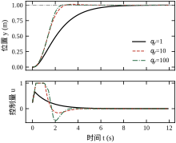
| q_y | IAE | 超调量 (%) | 上升时间 (s) | 调节时间 (s) | 峰值控制量 | 控制量总变差 |
|---|---|---|---|---|---|---|
| 1 | 2.491 | 0.00 | 3.96 | 7.00 | 0.661 | 1.07 |
| 10 | 1.458 | 1.35 | 1.60 | 2.70 | 1.000 | 2.09 |
| 100 | 1.394 | 0.72 | 1.41 | 2.40 | 1.000 | 2.72 |
q_y 从 1 加到 10，上升时间缩短 60%，这是最划算的一档；从 10 加到 100，上升时间只再降 12%，控制量总变差却增加 30%。原因是推力已经顶到限幅 1.0，再加大权重也只能贴着边界走（§58.6.5）。
所以 q_y 的调法不是“越大越好”，而是先找到“刚好用满执行器”的那一档，再往回收一点。用满意味着没有余量应对扰动，往回收 20%～30% 通常更稳。
表 58-6 还有一列值得看：控制量总变差从 2.09 增到 2.72（+30%），而上升时间只改善 12%。总变差直接对应执行器的往复次数与发热，是寿命的代理指标。可以用边际收益来判断：每提升 1% 的响应要付出多少执行器负担，超过 2:1 就不划算。本章 q_y 从 10 到 100 的边际比约为 2.5:1，所以 10 是更合理的默认值。
“刚好用满执行器”这一档可以用二分法找，不必凭感觉。先取一个明显偏小的 q_y，记录峰值控制量；再取一个明显偏大的，观察峰值是否贴住限幅。确认跨越之后，在区间内二分五六次，就能把“峰值刚好达到 0.9u_{\max}”的权重定位到两位有效数字。整个过程是几次自动仿真，比在界面上拖滑块可靠得多，而且结果可复现、可写进配置。
要注意这个边界随工况变化。同样的 q_y，小幅阶跃时峰值只有限幅的一半，大幅阶跃时早已贴边。所以“用满”应按最恶劣的标称工况来定，而不是按最常见的工况；否则一遇到大指令就进入饱和，边际收益骤降，现场就会觉得“参数换了但没效果”。
q_v 惩罚的是预测轨迹里的速度，作用相当于 PD 里的微分项：速度大就提前收力，因此抑制超调。但它和微分项一样有代价——压得太狠，系统会“拖着走”，响应变慢，而且对速度测量的噪声更敏感。
q_v 与 q_y 的比例决定阻尼强弱。对本章这种“位置—速度”结构，q_v/q_y 取 1/\omega_n^{2} 量级（\omega_n 为期望闭环自然频率）是合理起点：\omega_n=1 rad/s 时约取 1，与脚本默认值一致。若超调偏大就加大，若响应发木就减小。
q_v 对噪声敏感，是因为它乘在速度上，而速度通常由差分得到，噪声被 1/T_s 放大。若现场速度信号毛刺明显，应先加低通滤波或改用观测器，再谈 q_v；否则调大 q_v 等于把噪声直接搬进控制量，表现为阀或电机的“沙沙”声。先治信号，再调权重，顺序反了会把滤波器的问题记到控制器头上。
这是最容易被误解的一个。把整个代价乘以正数 \alpha，最优解不变：
J\left(\alpha q_y,\alpha q_v,\alpha r_u\right)=\alpha J\left(q_y,q_v,r_u\right) \tag{58-26}
所以三个权重里只有两个独立自由度，真正起作用的是比值 q_y/r_u 与 q_v/r_u。工程上常把 r_u 固定为 1，只调另外两个；或者反过来固定 q_y=1，用 r_u 当“省力旋钮”。两种做法等价，混着调则容易在原地打转。
r_u 增大意味着“用力贵”，控制器会更柔和：控制量总变差下降、执行器磨损减少，代价是响应变慢。它和输入速率约束 \Delta u_{\max} 的作用有重叠，区别在于 r_u 是“软”的偏好，\Delta u_{\max} 是“硬”的边界。若已经设了严格的速率约束，r_u 的影响会被削弱。
纪律比公式重要：一次只动一个旋钮。既然只有比值有意义，同时改两个权重等于既改了比值又改了尺度，事后无法归因。建议把三个权重同除以 r_u，固定 r_u=1 后再调另外两个——这也是本章脚本的做法。
\boldsymbol{P} 由 q_y、q_v、r_u 通过式 (58-21) 算出，不能单独指定——改了权重，\boldsymbol{P} 就跟着变。这带来一个副作用：想让“远处更保守”，只能连阶段代价一起改。
变通做法是用两组权重：一组偏保守，离线算出 \boldsymbol{P}；阶段代价用另一组偏激进的权重。这样终端“刹车”更早，近处仍然跟得紧。代价是稳定性证明里的单调性不再严格成立，只能当作工程近似。
一个量级检查：\boldsymbol{P} 的元素应与 \boldsymbol{Q} 同阶或更大。若算出来的 \boldsymbol{P} 远小于 \boldsymbol{Q}，说明终端项几乎不起作用，短时域下就会重演表 58-4 右栏的“停在半路”。
还要注意 \boldsymbol{P} 与约束的一致性。Riccati 解来自无约束 LQR，若终端附近实际会饱和，\boldsymbol{P} 描述的“买断价”就偏低，终端项不足以拉住状态。校验方法：在目标附近取几个典型状态，用 LQR 律反算控制量，看是否超限；超限说明终端假设不成立，应改用终端集，或工程上加大 \boldsymbol{P} 作为近似。本章调试时遇到的“稳态停在 1.135 m”，就是终端项写错位置造成的——它作用在了绝对状态而非误差状态上，与 \boldsymbol{P} 本身的数值无关。
表 58-7 把六个参数放在一起，供现场对照。
| 参数 | 物理含义 | 增大后 | 本章取值 | 主要副作用 |
|---|---|---|---|---|
| N_p | 往前看多少拍 | 看得更远、计算更贵 | 20（2 s） | 远处模型误差进入决策 |
| N_c | 未来能拐几次弯 | 自由度更大、计算略增 | 5 | 超过 N_p/4 基本无收益 |
| q_y | 跟踪误差的份量 | 追得更紧 | 10 | 饱和后收益递减、控制量抖动 |
| q_v | 速度的份量 | 阻尼更大、超调更小 | 1 | 响应发木、噪声敏感 |
| r_u | 用力的价格 | 动作更柔和 | 1 | 响应变慢、静差增大 |
| \boldsymbol{P} | 终端买断价 | 短时域也能稳定 | Riccati 解 | 与阶段权重耦合 |
现场可以按三组典型配置起步：快响应（q_y 大、r_u 小，接受饱和）、平滑（r_u 大、速率约束紧）、保守（终端权重大、留 20% 推力余量）。先用场景库比较三组，再在选中的一组上微调，比从零试凑快得多。
三组配置的差别不在“好坏”，而在取舍：快响应适合节拍优先的产线，平滑适合机械寿命敏感的场合，保守适合安全余量要求高的设备。把它们写成配置项而不是临时参数，现场换型时可以直接切换，也便于事后追溯“当时为什么这么设”。
调参顺序建议与表的行序一致：先定时域，再定 q_y 到“刚好用满”，然后用 q_v 压超调，最后用 r_u 微调柔和度。反过来先调 r_u，往往会把“约束不够”误判成“权重不对”。
表 58-7 还要配一个警告：这六行不是六个独立旋钮。改动任一权重都会让 Riccati 解变化，进而改变终端项；改动 N_p 会改变“看多远”，从而改变同一组权重下的饱和时长；收紧 \Delta u_{\max} 会让 r_u 的效果被掩盖。工程上判断一次改动是否有效，要同时看三样：跟踪指标、控制量总变差、求解状态。只看第一样，很容易把“约束更紧”误读成“权重更优”。
还有一条总原则值得写在参数表旁边：任何一次调参都要能回答“为什么是它”。若答案是“试了试感觉好一点”，说明还没找到真正的瓶颈，只是碰巧落在某个局部。真正有效的改动通常伴随一个可解释的机制——饱和段缩短了、超调来自速度项不足、静差来自模型缺积分。找不到机制时，宁可先回去补测量，也不要继续在参数上做随机搜索。
MPC 的调参比 PID 多一层麻烦：参数之间通过约束耦合，单独看某一个参数“该调大还是调小”往往没有答案。可行的做法是把调参拆成有先后顺序的几件事，并且把“约束冲突”当成一等公民来处理，而不是等它出现时手忙脚乱。
顺序错了会白费很多时间。正确的顺序是：
反过来先调权重，常见的结局是：为了追上目标把 q_y 越加越大，控制量长期贴限幅，超调压不住，再回头怀疑模型——其实问题从第一步就没定义清。
第五步也常被跳过。“柔和度”听起来是审美问题，实际是寿命与噪声问题：r_u 或 \Delta u_{\max} 定得太松，控制量会在目标附近小幅抖动，长期看这是执行器的主要磨损来源。定得太紧，又会把跟踪误差拖大。它应该和机械维护周期一起定，而不是最后随手填一个数。
约束边界本身也需要“调”，只是它的调整依据是测量而不是优化。上线后统计每条约束的激活率：长期 100% 激活，说明执行器选小了，或者目标设得太激进，此时控制器能做的只是“贴着上限跑”，再调权重没有意义；从不激活且离边界很远，说明这条约束可以收紧，用安全余量换性能，或干脆删掉以减小问题规模。合理的状态是“关键约束在恶劣工况下偶尔激活，正常工况下留 10%～20% 余量”。
这条统计也是判断“性能是否还有提升空间”的最直接依据。若约束从未激活，性能瓶颈在权重或时域；若约束长期激活，瓶颈在物理条件，换算法、调权重都无法突破。把这两种情况分清，能省掉大量无效的调参时间。
约束冲突是 MPC 最典型的现场故障，而且它的表现很反直觉。图 58-9 是一个刻意构造的例子：初速 2 m/s 冲向 y=1 m，推力上限 0.5、每拍变化不超过 0.1，输出上限 1.0 m。
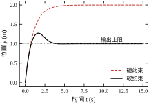
按 §58.6.5 的下界，这个初速在 0.5 的推力下最少要 1.195 m 才能停住，1 m 的输出上限从一开始就不可能满足。两种处理的结果是：
infeasible），控制器输出恒为 0。系统完全不制动，靠对象自身的阻尼滑行，位置一路漂到 2.0 m——比不管还糟。optimal_inaccurate，集中在越过峰值后的回落段（第 62～83 步），其余为最优。“不可行时输出 0”是 MPC 最危险的失效模式。它不报警、不振荡，看上去只是“没反应”，操作员很难判断控制器已经放弃。任何上线的 MPC 都必须显式处理这条路径。
求解器的失败状态要分清：infeasible 是约束互相矛盾（如本例），unbounded 是目标没有下界（常见于符号写反或漏了二次项），optimal_inaccurate 是近似收敛。三者处置完全不同——第一种要软化或放宽约束，第二种是代码缺陷，第三种多半是量纲或精度设置问题。统一当成“没解出来”，就会错过真正的线索。
软约束的做法是给越界量配一个松弛变量，并对它罚钱：
\min\ J+\rho\sum_{k=1}^{N_p}s_k,\qquad y_k\le y_{\max}+s_k,\qquad s_k\ge 0 \tag{58-27}
\rho 的取法有明确依据：它必须大于原硬约束的影子价格。若 \rho 太小，“越界”比“用力”便宜，优化器会心安理得地越界；若 \rho 太大，问题条件数变差，求解器容易报不准确。
实用做法是先按 \rho=10^{2} 试，观察稳态是否回到约束内；若仍有残余越界，按十倍递增。更好的做法是把 \rho 按输出量程归一化：\rho=\rho_0/y_{\max}^{2}，这样换量纲不必重调。
\rho 到底能改变什么，可以用一组实测回答。表 58-9 把 \rho 从 1 扫到 10^{5}，其余设置与图 58-9 完全一致。
| \rho | 峰值 (m) | 终值 (m) | 控制量总变差 | 非最优步数 |
|---|---|---|---|---|
| 1 | 1.272 | 1.000 | 1.01 | 19 |
| 10 | 1.272 | 1.000 | 1.01 | 20 |
| 100 | 1.272 | 1.000 | 1.01 | 17 |
| 10^{3} | 1.272 | 1.000 | 1.01 | 16 |
| 10^{4} | 1.272 | 1.000 | 1.01 | 24 |
| 10^{5} | 1.272 | 1.000 | 1.03 | 55 |
结果很说明问题：峰值与终值完全不随 \rho 变化。原因是在这个工况下，越界由动力学强制——初速 2 m/s、推力只有 0.5，无论权重怎么设，都必须滑过 1 m。\rho 唯一影响的是数值健康：从 10^{4} 到 10^{5}，非最优步数从 24 跳到 55，总变差也略微上升，说明条件数开始恶化。
这给出一个实用的判别法：如果调 \rho 能明显改变越界量，说明约束本来可行，越界是“买来的”，应加大 \rho；如果怎么调都不变，说明越界是物理强制的，应改执行器、改流程或改目标，而不是继续调 \rho。把这两种情况混为一谈，是软约束调参最常见的无效劳动。
松弛变量可以逐拍独立，也可以整段共用一个。两者差别不在峰值，而在“越界怎么分布”：逐拍独立时罚的是各拍越界量之和，优化器倾向于把越界摊到少数几拍；整段共用时罚的是最大越界，多拍同时贴着同一个越界量不再额外收费，越界容易被“摊平”。本章脚本为了演示简洁，用的是单个标量松弛，图 58-9 中越界持续了约 30 拍才收回；若希望越界尽快收敛，应改为逐拍独立，让每一拍的越界都单独付账。
更精细的做法是分层软化：安全相关约束给极高的 \rho（近乎硬），工艺约束给中等 \rho，舒适性指标给低 \rho。冲突时系统会先牺牲舒适性，再牺牲工艺，绝不碰安全。代价是要维护三组松弛变量与权重，代码复杂度上升，但对有安全等级要求的设备值得。它和 §58.6.2 的终端集是两种不同层面的保障：终端集保证“收尾可行”，分层软化保证“冲突时退让有序”。
软化还有两条边界。第一，输入幅值约束通常不该软化：推力越界对应过流或机械过载，软化了等于允许控制器“违规”，只是把问题从算法推给了硬件。真要软化，也应只软速率约束——它对应磨损而非即时损坏。第二，松弛变量要带量纲归一化。位置以米、速度以米每秒计时，同一个 \rho 对两者的“罚款力度”完全不同；按各自量程除以 y_{\max} 后再罚，才能让“先牺牲谁”由设定决定，而不是由单位决定。
罚函数的形式也值得选一下。L1（线性罚）的好处是“要么不越界，要么只越必要的那一点”，解更稀疏、物理意义清楚；L2（二次罚）在大越界时罚得更狠，但小越界几乎免费，容易出现“长期微量越界”。本章用 L1，与式 (58-27) 一致。若发现稳态始终差一点点才回到边界内，多半是 L2 的锅，换成 L1 即可。
现场排查可以照表 58-8 走。左列是现象，中列是最常见的原因，右列是第一步该做的事。
| 现象 | 可能原因 | 处置 |
|---|---|---|
| 缓慢爬行、停在半路 | 时域太短且无终端代价 | 加 Riccati 终端项 |
| 起步即不可行、输出恒 0 | 初始状态不在可达集 | 改软约束并报警 |
| 越界后回不来 | \rho 偏小或松弛共用 | 加大 \rho、逐拍独立 |
| 控制量贴限幅抖动 | 速率约束过紧 + q_y 过大 | 放宽 \Delta u_{\max} 或回收 q_y |
| 每拍都报不准确 | 量纲差异大、\boldsymbol{H} 条件数差 | 状态与控制量归一化 |
| 稳态有静差 | 模型无积分、扰动未建模 | offset-free 增广（§58.9） |
这张表的价值在于把“调参”变成“诊断”：每条现象都对应一个可验证的假设，而不是“再试试别的权重”。
还可以补两条常见现象。“目标附近小幅抖动”多为终止精度过松，或 \Delta u 约束与 r_u 相互冲突——控制量在两个相邻值之间来回跳，幅度不大却持续不断。“指令阶跃后长时间不动”多为 N_c 太小或速率约束过紧，优化器“想动但动不了”。两条都属实现层，不必动模型，先查求解精度与速率约束。
调参不要在线做。正确做法是准备一个场景库：阶跃、斜坡、多段指令、负载扰动、参数摄动、初始状态偏离，每个场景录一段真实数据或高保真仿真数据，然后批量回放。
回放时同时记录三类量：跟踪指标（IAE、超调、调节时间）、执行器负担（总变差、峰值、饱和时长）、求解健康度（非最优步数、单步耗时上分位数）。只看第一类，很容易选出“性能好但执行器很快磨坏”的参数。
一组参数在场景库上的表现若出现“某个场景特别好、其余都差”，通常说明参数在迎合那一个场景，应直接淘汰。工程上要的是没有短板的一组，而不是平均分最高的一组。
场景库的最小集合：阶跃（不同幅值）、斜坡、多段指令、负载扰动（输入端与输出端各一）、参数摄动（增益、时间常数、延迟）、初始状态偏离、约束冲突。每个场景录 10～30 s，统一采样率。回放脚本要能一键跑完全部场景并输出对比表——否则没人会坚持用，再好的方法也会退化成“现场试”。
回放结果要按场景分组看，而不是只看总分。总分掩盖短板：一个参数组可能靠三个简单场景把均分拉高，却在唯一带延迟的场景上超调 40%。工程验收看的恰恰是“最差的那个场景能不能接受”。
回放数据最好来自真实设备，而不是纯仿真。仿真里没有传感器噪声、没有执行器死区、没有总线抖动，用仿真数据选出的参数往往偏激进。若暂时拿不到实测数据，至少要在仿真里注入这几类非理想因素：给测量叠加上限幅内的白噪声、给控制量加死区与量化、把通信延迟设成随机抖动。这样选出的参数鲁棒性会好得多，代价是仿真结果不再“漂亮”——但这才是现场的样子。
回放的价值还在于它把“调参”变成了可重复的实验。同一个场景库、同一套指标、同一份脚本，任何人跑都得到同一张表。参数好不好不再依赖某个人的手感，而是看数据。这一点对团队协作的意义，甚至大于对算法本身的意义。
前八节讲的是“标准 MPC”。它在工程上有三个已知短板：没有积分作用，遇到常值扰动会留静差；每拍都要在线求解，算力紧张时吃紧；线性模型撑不住强非线性对象。本节按这三条讲四类改进路线。
先看实测。在本章对象的输入端叠加 0.2 的常值扰动（t\ge5 s），最大偏差 0.0666 m，终值停在 1.0655 m，静差 6.55\times10^{-2} m。原因不复杂：代价函数里没有积分项，稳态时优化器认为“已经到位”——按模型预测 y=1，实际却差 0.0655。这和第 44 章讲过的 P 控制静差是同一回事。
常规有两条补救路线。一是在代价里直接加误差积分，等价于给 MPC 装一个 I 项；二是 offset-free 结构：把扰动当作状态估计出来，再前馈抵消。后者更受青睐，因为它保留了约束处理能力，也不破坏 §58.6 的稳定性论证结构。
做法是把常值输入扰动 d 增广进状态：
\begin{bmatrix}\boldsymbol{x}_{k+1}\\ d_{k+1}\end{bmatrix} =\begin{bmatrix}\boldsymbol{A} & \boldsymbol{B}\\ \boldsymbol{0} & 1\end{bmatrix} \begin{bmatrix}\boldsymbol{x}_{k}\\ d_{k}\end{bmatrix} +\begin{bmatrix}\boldsymbol{B}\\ 0\end{bmatrix}u_k,\qquad y_k=\begin{bmatrix}\boldsymbol{C} & 0\end{bmatrix} \begin{bmatrix}\boldsymbol{x}_{k}\\ d_{k}\end{bmatrix} \tag{58-28}
用稳态 Kalman 或 Luenberger 观测器估出 \hat{d}，再把控制量改成 u=u_{\mathrm{mpc}}-\hat{d}：优化器算的是“需要多少总推力”，减掉扰动提供的部分，剩下的才是执行器该出的力。
一个实现陷阱：目标点也必须用增广模型重新算稳态。若仍按原模型把目标当成 \boldsymbol{x}_{\mathrm{ref}}，扰动估计会把稳态拉偏，静差换个地方又冒出来。offset-free 的失败案例里，一半以上是“目标计算不一致”。
正确的做法是解一次稳态方程：\boldsymbol{x}_{\mathrm{ss}}=\boldsymbol{A}\boldsymbol{x}_{\mathrm{ss}}+\boldsymbol{B}(u_{\mathrm{ss}}+\hat d)、\boldsymbol{C}\boldsymbol{x}_{\mathrm{ss}}=r，联立求出 (\boldsymbol{x}_{\mathrm{ss}},u_{\mathrm{ss}})，再把终端项与输出目标都换成这对值。它保证“模型意义上的到位”与“实际意义上的到位”是同一个点。
还有两个前提常被忽略。第一，扰动必须能观：若 d 只作用于不可测的状态，观测器估不出它，静差依旧。第二，\hat d 要限幅。长时间饱和后，观测器本身也会累积误差，出现类似积分饱和的现象；给 \hat d 设一个物理上合理的上下界，既防发散，也让故障更容易被发现。
从机理上看，offset-free 并没有“偷偷加积分”。它做的是把未知常值当成状态，用观测器逐步逼近，再用估计值前馈。积分作用体现在 \hat d 的收敛过程里，而不是显式写在代价函数中——这也是它不破坏约束处理与稳定性论证的原因。
观测器的收敛速度要单独设，不能和 MPC 的时域混为一谈。经验是把扰动观测器的极点放在闭环带宽的 1/3 到 1/5 处：太快会把噪声当成扰动，\hat d 抖动并直接注入控制量；太慢则扰动已经影响了整条轨迹才被纠正，静差消失得很慢。本章的 0.2 阶跃扰动，若观测器带宽与闭环相当，大约 3～4 个闭环时间常数后 \hat d 才稳定；这段时间内的偏差是“必须付”的，不能指望调参消掉。
还要给 \hat d 设一个物理上限，并在超限时报警而不是静默截断。常值扰动通常来自负载、摩擦或供压偏差，量级有明确范围；若估计值持续顶在上限，说明模型缺了别的项（例如执行器增益衰减），此时限幅只是掩盖问题。把“\hat d 长期饱和”当成一条独立的监控指标，往往比看位置曲线更早发现问题。
线性系统、二次代价、多面体约束这三者凑齐时，最优解有解析结构：它是状态的分段仿射函数。
u^{*}(\boldsymbol{x})=\boldsymbol{K}_i\boldsymbol{x}+\boldsymbol{c}_i, \qquad \boldsymbol{x}\in\mathcal{R}_i \tag{58-29}
离线把状态空间切成若干多面体区域 \mathcal{R}_i，每区存一对 (\boldsymbol{K}_i,\boldsymbol{c}_i)；在线只需定位区域，再做一次矩阵乘法。最坏执行时间因此可预测，适合毫秒甚至微秒级的场合，例如电力电子与电机驱动。
代价是区域数随状态维数指数增长。两个状态、N_p=10 时通常几百到几千个区域；四个状态以上常到十万级，存储和定位都吃不消。所以显式 MPC 的适用范围比宣传中窄得多，它解决的是“算力极小但状态很少”的问题，不是通用加速手段。
可以粗算一笔存储账：每个区域存一个增益矩阵与一个偏置向量，两个状态、单输入时约 3 个双精度数，即 24 字节；一千个区域约 24 KB，十万个区域约 2.4 MB。存储本身不算大，真正的麻烦在定位——每次采样都要判断状态落在哪个多面体里，区域多时这一步的耗时可能超过在线求解一个小规模 QP。
显式解还有一个隐性代价：它把模型“焊死”在表里。对象参数一变，整张表都要重算；在线 MPC 则每拍用新状态重新优化，对参数变化天然宽容。因此显式 MPC 适合模型稳定、批量生产的产品（电机驱动、电源），不适合需要频繁改造的过程装置。
区域数量对状态维数的敏感度值得记住。两个状态时通常几百到几千区，三个状态可能上万，四个状态常到十万级——大致每增加一维，区域数乘上一个两位数。原因不难理解：每一组有效约束组合都可能对应一个区域，而组合数随维数组合式增长。所以“显式 MPC 适合低维”不是实现限制，而是组合数学的限制。
在线定位也有技巧。朴素的逐区域判断是 O(n)，十万个区域时不可接受；实际做法是预先构造一棵二叉搜索树或把区域组织成层次结构，把定位降到 O(\log n)。即便如此，树的结构必须与区域一起重新生成，模型一变就要整体重建。这套工程复杂度，往往比“在线解一个小 QP”更高——这也是显式 MPC 在实际项目中不如文献中常见的原因。
折中做法是“显式 + 在线兜底”：正常情况下查表，若状态落在所有区域之外（模型漂移或扰动导致），切换到在线求解并报警。这样既保住了常见的快速路径，又不至于在边界情形下输出无定义。
§58.10 的实测会显示一个反直觉的事实：求解器本身只要 0.04～0.14 ms，而整个 Python 调用约 1 ms。瓶颈往往不在 QP，而在接口、内存分配与数据搬运。
三条有效手段：
第三条的效果在实测中已经能看出来：N_p 从 10 增到 80，求解器耗时只从 0.043 ms 增到 0.135 ms，近似线性而非立方。原因不是 \boldsymbol{H} 稀疏（它是稠密的），而是约束行数与迭代中的稀疏矩阵—向量乘都是线性增长，OSQP 作为一阶方法正好吃这一口。若换成需要分解稠密矩阵的内点法，规模上去后耗时会明显更陡。
固定迭代与提前终止值得单独说。real-time iteration 的核心不是“算得快”，而是“算得固定”：每次采样只做一次线性化与一次 QP 迭代，结果直接下发，下一拍在新状态上重来。它放弃每拍最优，换来最坏时间恒定；只要外层反馈足够快，次优偏差会被下一拍纠正。工业上许多高速 MPC 都是这个思路。
代价是稳定性证明变复杂：单步不完全求解不再保证代价单调，需要额外的收缩或充分下降条件。工程上的通行做法是“限制迭代次数的同时保留可行性”——哪怕只前进一小步，也要保证约束不被破坏。
还要提醒一句量级：代码生成后在嵌入式上做到几十微秒是常见的公开基准，但那是针对小规模、结构固定的问题；本章的 Python 实现在毫秒量级，主要成本在解释器与内存管理。不要把 PC 上的 Python 数字直接当成嵌入式性能，两者通常差一到两个数量级。
两条路，风险不同。
工程上较稳妥的是混合结构：学习部分只负责“提议”，外面套一层安全过滤——投影到约束集，或用不变集做一次可行性检查。纯粹端到端、无约束保证的方案，目前还不适合放在有安全要求的回路上。
两条路的数据需求也不同。Koopman 需要覆盖工作区间的激励数据，升维之后还可能失去物理可解释性；神经网络样本效率低，遇到工况切换时容易外推失败。若数据采集成本高，优先考虑“机理模型 + 局部修正”，而不是推倒重来建一个纯数据模型。
无论走哪条路，都要留一条回到名义模型的路径：一旦学习模型的预测残差超过阈值，就切回机理模型并报警。这条路径平时用不到，出事时是唯一能解释“为什么控制器突然变了性格”的线索。
学习部分还有一个容易被低估的风险：分布漂移是渐进的，而失效是突发的。模型在训练分布内表现良好，随着设备老化，输入慢慢移出分布，输出却仍然“看起来合理”，直到某一天越过边界才爆发。对策不是提高网络容量，而是持续监控输入分布与预测残差，把“离分布有多远”当成一个实时指标，而不是等闭环出问题再回溯。
安全过滤也不该只有一层。常见做法是三层串联：网络输出先做物理投影（限幅、限速），再过一遍基于名义模型的可达性检查，最后交给一个独立的监督逻辑判断“这一步是否会让状态进入不可恢复区域”。三层都通过才下发；任一层拒绝，就退回名义 MPC。这套结构增加了延迟，但把一个“不可解释的黑箱”变成了“有明确否决权的白箱”，对需要通过评审的项目是必要的。
MPC 不该取代所有回路。常见的分层是：
这样 MPC 的采样周期可以放宽到 0.1～1 s，算力压力骤降；底层的快速扰动也不必进入优化模型，模型可以只保留慢动态。反过来，把所有回路塞进一个 MPC，模型维数与求解时间都会失控。
判断依据很直接：如果一个问题没有约束、没有多变量耦合、动态又不慢，用 PID 就够了。MPC 的价值来自“约束”和“耦合”，不来自“先进”。
两层的时间尺度要拉开。经验上，上层采样周期至少是下层的 5～10 倍，否则两层会互相打架：下层还没跟踪上设定值，上层已经根据“没跟上”又改了一次设定值，形成拍频式振荡。若把 MPC 放在 0.1 s、底层伺服放在 10 ms，比例正好是 10 倍，属于安全区间。
另一个细节是设定值滤波。上层输出若直接阶跃给下层，下层会瞬间饱和；加一个一阶滤波（时间常数取上层周期的 1～2 倍）能让下层始终工作在线性区，也避免上层“看到”下层饱和而误判对象动态。
两层之间的接口也要约定清楚。上层至少应告诉下层三件事：目标值、可用范围（不只是当前设定值）、以及“我现在处于降级状态”的标志。第三项最容易被忽略——若上层已经不可行、正在靠软约束维持，下层却毫不知情地继续按原设定值跟踪，两层的错误会叠加。工程做法是把健康状态做成一个显式信号，下层收到异常标志后切到本地保守设定值，而不是继续信任上层。
反过来，下层也应向上层反馈“我能跟到多快”。若下层已经饱和，上层却仍按理想动态预测，就会反复给出无法实现的设定值，形成慢速振荡。把下层的饱和标志纳入上层的约束，是两层协同里最划算的一项改动，代价只是几个布尔量。
算法正确只完成了一半。上线还要回答四个问题：算得过来吗、状态从哪来、算不出来怎么办、怎么证明它一直是好的。本节按这四问展开。
图 58-10 与表 58-10 是本章脚本在普通 PC 上的实测：每档 40 次重复，取中位数与 95 分位，限幅与无限幅两组分别统计。
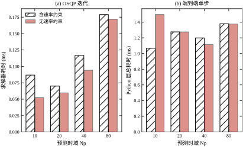
| N_p | 中位总耗时 (ms) | 中位总耗时/无限幅 (ms) | 求解器中位 (ms) | p95 总耗时 (ms) |
|---|---|---|---|---|
| 10 | 1.085 | 1.017 | 0.047 | 2.011 |
| 20 | 0.973 | 1.012 | 0.053 | 1.462 |
| 40 | 1.028 | 1.189 | 0.079 | 1.529 |
| 80 | 1.268 | 1.124 | 0.135 | 2.492 |
三条读数：
p95 与中位数的差距来自哪里？主要是三处：求解器迭代次数在约束切换时会突增；Python 的内存分配与垃圾回收有随机停顿；操作系统的调度抖动。三者都不是“算法慢”，而是“运行时环境不稳定”。对应的处理也各不相同：给 QP 设固定迭代上限、预分配所有数组、把控制线程绑核并提高优先级。
要对症下药，得先把耗时拆成三层分别测：纯矩阵运算（构造 \boldsymbol{\Gamma}、装配约束）、求解器内部（prob.solver_stats.solve_time）、框架开销（参数赋值、结果读取、类型转换）。三者相加接近总耗时，但优化手段完全不同：第一层靠预计算与缓存（\boldsymbol{\Gamma}、\boldsymbol{H} 与状态无关，初始化算一次即可），第二层靠换算法或固定迭代次数，第三层只能靠换实现语言或代码生成。若不做这个拆分，很容易把框架开销误判成“求解太慢”，然后去做毫无收益的算法优化。
本章的实测正是这种情况：N_p=80 时求解器只占 0.135 ms，而总耗时 1.268 ms，框架与装配占了近九成。换成 C 实现后，这九成会大幅压缩，求解器那一小段反而变成主要成本——优化到后期，瓶颈会自动搬家，每一轮都要重新测量。
这也说明为什么“先量再定”比“按经验估”可靠：同一个算法在不同实现下可能差十倍，而 p95 与中位数的比例又取决于环境。没有测量，预算就只是猜测。
预算约束写成
T_{\mathrm{calc}}^{\mathrm{p95}}+T_{\mathrm{io}}+T_{\mathrm{margin}}\le T_s \tag{58-30}
本章 T_s=0.1 s，T_{\mathrm{calc}}^{\mathrm{p95}} 只占 2.5%，余量充足。但若把 T_s 压到 10 ms（更快的外环或更小的对象），同一套 Python 实现会吃掉四分之一周期，再加上 IO 与抖动，已经没有余量——这时必须换 C 实现或代码生成，而不是“优化一下 Python”。
四种选择，按算力与确定性排序：
无论哪种，都要做到在线阶段零动态内存分配：所有矩阵、工作区在初始化时一次性分配。这是“最坏执行时间”可控的前提。日志、文件 IO、垃圾回收都必须挡在控制周期之外。
手写小规模 QP 之所以现实，是因为紧缩型问题的规模由 N_c 决定。本章 N_c=5、单输入，决策变量只有 5 个；有效集法在这么小的规模上，每步只做几次数值运算，代码量可以控制在一两百行。它的最坏迭代次数还能显式限定，适合需要“最坏时间可证”的场合。代价是没有通用求解器的鲁棒性——退化、病态、不可行等边界情形都要自己处理，测试工作量远大于代码量。
四种形态的选择也不必一次定死。常见路径是：先在 PC 或工控机上用通用库跑通，积累场景与参数；确认算法有效后，再把热点路径换成代码生成或手写实现。反过来先做嵌入式优化，往往会为一个还没验证的算法付出大量工程成本。
四种形态的取舍可以归结为两个问题：批量还是单台、有无安全认证。批量产品值得投入代码生成与定点优化，摊薄开发成本；单台设备或试点项目用解释执行更快落地，先验证算法再谈性能。有认证要求时，优先选择结构简单、行为可穷举的实现——哪怕慢一点，可证明性比速度更值钱。
定点实现还要多做一步：在约束边界附近做扫频测试，确认量化误差不会让控制量在两个相邻档位之间反复跳。这一步在浮点开发中完全体会不到，却是定点版本最常见的现场问题。
MPC 要的是完整状态，现场往往只测得到一个位置。三条常见路径：
无论哪条，估计出来的状态都带延迟。这个延迟必须计入预测起点（§58.4.5），否则优化器会拿“过去的现在”做决策，效果与未建模延迟相同。
顺序上有一个容易搞反的地方：应当先做状态估计、再做时间对齐，最后前移一拍作为预测起点。反过来先前移再估计，等于把同一个延迟算了两次。
观测器的带宽要按“够快但不过快”来选。经验是把观测器极点放在闭环极点的 2～5 倍处：太慢，估计值跟不上真实状态，等效于给回路又加了一段延迟，§58.6 的失配结论会原样重现；太快，测量噪声被放大进速度估计，控制量随之抖动，还会通过 \Delta u 约束触发不必要的饱和。这一步没有解析最优，只能在噪声水平与响应速度之间实测折中。
差分求速度的做法还要多算一笔账：噪声放大倍数为 1/T_s，T_s=0.1 s 时是 10 倍，若位置噪声为 0.1 mm，速度噪声就达 1 mm/s，再经 q_v 放大进入代价，控制量会明显毛刺。滤波能压住它，但一阶滤波的相位滞后在剪切频率处不可忽略——用滤波换平滑，本质上是用延迟换噪声，这笔交易必须记在预算里，而不是当成“免费的预处理”。
时间同步也值得单独检查。若传感器数据通过总线异步到达，控制器读到的“当前状态”可能由不同时刻的样本拼成，速度与位置的时序不一致，预测会凭空产生一个虚假的加速度。低成本的做法是给每个样本打时间戳，在控制器里按统一时刻重采样；要求更高时用硬件触发或 PTP 同步。
MPC 的失效模式比 PID 多，必须逐条设计降级路径：
原则只有一条：任何失效路径都要落到一个可预测的保守动作上。现场最怕的不是性能下降，而是“控制器悄悄放弃、没人知道”。
降级不应是“一个 if 判断”，而应是一个状态机：正常 → 降级 → 安全，每级有明确的进入条件与退出条件，并且带滞回。没有滞回，系统会在边界上反复切换，比一直待在降级状态更糟。例如连续 3 次超时进入降级，要连续 20 次正常才允许恢复；恢复后 1 分钟内再次超时，则直接锁定到安全状态并等待人工确认。
这套逻辑必须演练。每季度至少注入一次故障——拔掉一个传感器、强制求解超时、把目标设到不可达——确认系统按设计动作。没有演练过的降级路径，等于没有：代码里写着，现场第一次真正触发时才发现条件写错，这类事故并不少见。
演练结果要留痕：注入了什么故障、系统在几拍内进入哪一级、恢复用了多久、期间输出如何变化。这份记录的价值不在于证明系统“没问题”，而在于暴露“哪一级切换得比预期慢”。切换慢往往不是逻辑写错，而是滞回阈值定得太保守——例如要求连续 20 次正常才恢复，实际却因为偶发噪声永远凑不满，系统就卡在降级态出不来。
上线前按表 58-11 逐项签字。任何一项没有量化结论，就不要投运。
| 项目 | 检查内容 | 通过标准 |
|---|---|---|
| 模型 | 阶跃响应拟合误差 | 主要动态段误差 < 10% |
| 延迟 | 实测纯延迟与模型对比 | 偏差 < 1 个采样周期 |
| 约束 | 边界是否留余量 | 机械/电气余量 ≥ 10% |
| 可行性 | 全场景库回放 | 无连续非最优步 |
| 算力 | 单步耗时 p95 与最大值 | ≤ 50% 采样周期 |
| 降级 | 注入超时、不可行、断线 | 均进入预期状态 |
| 观测器 | 估计值与实测对比 | 稳态偏差 < 2% |
| 记录 | 每拍状态、解、耗时 | 可回溯 ≥ 30 天 |
这张表里最容易被跳过的是“降级”和“记录”。前者在演示时永远用不到，出事时却是唯一救命的东西；后者在调参阶段看不出价值，等现场出现偶发异常时，没有逐拍记录就无从复现。
表外还有三件事，同样影响长期可用性。版本一致：模型文件、参数集、控制器代码必须有同一个版本号，改一个就要同步另一个，否则现场会出现“代码是新的、参数是旧的”这类无法复现的问题。变更评审：任何约束边界的修改都要走评审，因为它们直接对应安全余量。人员培训：值班人员至少要能读懂三类报警——不可行、超时、估计发散，并知道每一类该做什么。
记录的内容也要设计，不是“越多越好”。最小集合是：每拍的测量值、估计状态、下发控制量、求解状态、求解耗时、约束激活标志、\hat d（若启用）。这七项足以复现绝大多数异常。若存储紧张，可以按“事件触发”记录——正常时每 10 拍存一条，一旦出现非最优、饱和、越界就转为逐拍记录，并保留前后各 30 秒。这样既能控制体积，又不会在关键时刻丢数据。
最后一个常被忽略的检查项是回放能力：拿现场记录的数据，能否在办公室完整重跑一遍并得到相同结果。这要求求解器版本、参数、初值全部可复现，也要求记录包含足够的信息。做不到回放的系统，出了问题只能靠猜；能做到回放的系统，大多数问题在第一次复现时就能定位。
MPC 常被当成“高端控制”的代名词，这既高估了它，也低估了它。它解决的是特定结构的问题：有约束、有预测需求、有多变量耦合。离开这三条，它的优势会迅速消失，只剩下维护成本。
评价是否值得上，最好用总拥有成本的视角，而不是只看控制器本身的开发量。建模、集成、调试、维护四块里，前两块在项目期内完成，后两块贯穿整个设备生命周期。很多项目在验收时表现优异，两三年后却因为模型失准、原开发者离职而被迫退回 PID——失败不在技术，而在没有为长尾成本做准备。
这四条优势里，只有第一条是“结构性”的，后三条都可以被其他方法部分替代：预测提前量可以用前馈加 Smith 预估近似，多变量协调可以用解耦器加单回路整定，目标可解释可以用一套文档来补。真正让 MPC 难以替代的，是“约束在优化内部被精确处理”——它不需要事后加抗饱和，也不需要为每种约束组合单独设计逻辑。判断一个项目是否值得上 MPC，最终还是会回到这一条：约束是否多、是否经常激活、是否互相冲突。
也可以反向理解：若一个项目的约束只有执行器幅值这一条，而且很少贴边，那么 MPC 的优势几乎为零，剩下的全是成本。这类项目在现实中占比不低，却常常因为“先进”而被选中，最后以“维护不了”收场。
这五条代价里，最容易被低估的是第一条的“维护”部分。建模成本在项目预算里看得见，维护成本却分散在未来几年：每次设备改造要复核模型，每次换型要重跑场景库，每次人员变动要重新交接参数含义。一个 MPC 项目的真实成本，往往在投运后第三年才显现。若组织没有为此准备人力，技术再先进也会退化成“不敢动、也不敢拆”的黑箱。
认证方面还有一条现实约束：可解释性不等于可认证性。即使每一步的优化问题都能打印出来，评审方仍会追问“如何保证在所有可能状态下都有解、都安全”。能回答这个问题的，通常是受限形式的 MPC（线性、终端集、tube），而不是功能最全的那个版本。这意味着安全关键场合要接受性能上的保守，把“能证明”放在“跑得好”之前。
判断要不要上 MPC，可以照表 58-12 逐条对照。
| 条件 | 倾向 | 说明 |
|---|---|---|
| 存在硬约束且经常被激活 | 用 MPC | 约束越紧，相对收益越大 |
| 多变量强耦合 | 用 MPC | 省去解耦设计与反复整定 |
| 纯延迟大、需要提前动作 | 用 MPC | 模型里显式含延迟即可 |
| 单回路、无约束、线性 | 用 PID | MPC 只增加成本 |
| 采样周期小于 1 ms | 显式 MPC 或专用算法 | 通用 QP 求解来不及 |
| 模型难建、强非线性 | 先建模或分层 | 底层 PID + 上层慢 MPC |
这张表的关键不在“哪一行打勾”，而在约束是否经常被激活。约束长期不激活时，MPC 的行为与 LQR 几乎一致，付出的却是在线求解与维护成本；约束长期激活时，PID 无论怎么调都只能贴着边界挣扎，这时 MPC 的收益是结构性的。
反过来看，有四类项目几乎注定失败：模型建不出来或工况变化太快，模型刚辨识完就过期；状态不可测且观测器也补不出，预测从错误的起点出发；现场没有能维护参数的人，投运后没人敢动；把 MPC 用在无约束的单回路上，收益抵不过复杂度。这四类的共同点不是“算法不够好”，而是前提不成立——换任何先进算法都救不回来。
实践上更可取的是分阶段引入，而不是一次替换。第一阶段让 MPC 只做“监督层”：底层仍是原来的 PID，MPC 只在其上给出设定值与约束边界，即使 MPC 失效，底层仍能维持基本运行。第二阶段把速率约束与多变量协调交给 MPC，观察数月，确认无异常激活与频繁降级。第三阶段才考虑取消底层回路，让 MPC 直接输出执行器指令。每阶段都有独立的验收标准与回退方式，风险被切成三段，而不是押在一次投运上。
这套路径还有一个隐性好处：它让现场人员逐步建立对 MPC 的信任。控制器再正确，若操作员不理解它为什么在某时刻突然减速，也会被手动干预掉。分阶段上线给了双方适应的时间，也给日志留下了“人在回路里”的对照记录。
把 MPC 放回方法谱系里，它的位置很清楚：
这张谱系图还能回答一个常见疑问：“既然 LQR 也有 \boldsymbol{P}，为什么还要 MPC？”差别只在约束。无约束时，MPC 的最优解恰是 LQR 的静态反馈，逐拍求解纯属浪费；一旦约束激活，LQR 只能靠饱和与抗饱和逻辑近似处理，而 MPC 是把这个约束直接纳入优化，解出来的动作在“当前这一步”就是最优且可行的。换句话说，LQR 告诉你“理想情况下该怎么走”，MPC 告诉你“在限制下这一步该出多大力”。
反过来也要承认 MPC 的边界：它不给解析的稳定裕度，也不能自动处理未建模动态。工程上常用“MPC + 一个低频的鲁棒性检查（增益/相位裕度估计、参数摄动回放）”组合，而不是指望 MPC 自己把所有问题吃掉。
最后给一条实用判据：只问三个问题——约束是否经常被触碰？是否存在多变量耦合？模型能否建到“预测误差小于控制精度”？三个都答“是”，MPC 值得上；有一个答“否”，先考虑更简单的方案。
本章的可复现实验由两个脚本完成，都在 book/code/ 下：
ch058_sim.py：对象离散化、紧缩型 MPC、闭环仿真与九组实验；ch058_figs.py：读取实验函数，生成全书统一的 SVG 与 PDF 插图。运行方式（在 book/ 目录下，使用带 control、cvxpy 的环境）：
python code/ch058_sim.py
python code/ch058_figs.py两个脚本都不需要命令行参数，全部配置集中在文件顶部：TS、默认时域与权重、实验用的扫描点。改实验只需改这些常量，不必动函数体。图输出到 book/figs/ch058/，每张图同时保存 SVG 与 PDF，前者用于网页，后者用于印刷。
下面是控制器的核心，约 60 行，只保留对象离散化、预测矩阵与控制器本体；九组实验与绘图代码在同名脚本的其余部分。导入语句为 numpy as np、control as ct、cvxpy as cp。
TS = 0.1 # 采样周期 (s)
def plant_ss(gain=1.0, tau=1.0):
ac = np.array([[0.0, 1.0], [0.0, -1.0 / tau]]) # p_dot = v
bc = np.array([[0.0], [gain / tau]]) # tau*v_dot = -v + gain*u
cc = np.array([[1.0, 0.0]])
d = ct.c2d(ct.ss(ac, bc, cc, 0.0), TS, method="zoh")
return (np.asarray(d.A, float), np.asarray(d.B, float),
np.asarray(d.C, float), np.asarray(d.D, float))
A, B, C, D = plant_ss()
NX = A.shape[0]
VEL = np.array([0.0, 1.0]) # 速度行
def prediction_matrices(np_, nc):
phi = np.zeros((NX * (np_ + 1), NX))
gam = np.zeros((NX * (np_ + 1), nc))
ak = np.eye(NX)
for k in range(np_ + 1):
phi[k * NX:(k + 1) * NX, :] = ak
for i in range(min(k, np_)):
j = min(i, nc - 1)
gam[k * NX:(k + 1) * NX, j] += np.linalg.matrix_power(A, k - 1 - i) @ B[:, 0]
ak = A @ ak
return phi, gam
class MPC:
def __init__(self, np_=20, nc=5, qy=10.0, qv=1.0, ru=1.0,
p_term=None, umax=1.0, dumax=0.25, ymax=None,
soft=False, rho=1.0e2):
self.Np, self.Nc = np_, nc
self.phi, self.gam = prediction_matrices(np_, nc)
u, x0, uprev, ref = cp.Variable(nc), cp.Parameter(NX), cp.Parameter(), cp.Parameter()
x = self.phi @ x0 + self.gam @ u
yrow = np.zeros((np_, NX * (np_ + 1)))
vrow = np.zeros((np_, NX * (np_ + 1)))
for k in range(np_):
yrow[k, k * NX:(k + 1) * NX] = C[0]
vrow[k, k * NX:(k + 1) * NX] = VEL
cost = (qy * cp.sum_squares(yrow @ x - ref) + qv * cp.sum_squares(vrow @ x)
+ ru * cp.sum_squares(u))
if p_term is not None: # 终端项必须作用在误差状态上
cost += cp.quad_form(x[-NX:] - ref * np.array([1.0, 0.0]),
cp.psd_wrap(p_term))
cons = [u <= umax, u >= -umax,
u[0] - uprev <= dumax, u[0] - uprev >= -dumax,
u[1:] - u[:-1] <= dumax, u[1:] - u[:-1] >= -dumax]
if ymax is not None and soft:
s = cp.Variable(nonneg=True)
cons.append(yrow @ x <= ymax + s)
cost += rho * s
self.prob = cp.Problem(cp.Minimize(cost), cons)
self.u, self.x0, self.uprev, self.ref = u, x0, uprev, ref
def step(self, x, ref, u_prev):
self.x0.value, self.ref.value, self.uprev.value = x, ref, u_prev
self.prob.solve(solver=cp.OSQP, warm_start=True,
eps_abs=1e-7, eps_rel=1e-7, max_iter=8000)
return float(u_prev) if self.u.value is None else float(self.u.value[0])几处与正文对应的实现细节：
ct.tf([1],[1,1,0]) 直接离散，control 库给出的状态顺序是 [v,p]，代入正文的 \boldsymbol{C}=[1,0] 会取错输出。显式写连续状态方程可以避免这个坑。step() 里没有 try/except 兜底以外的花招，但每拍都记下 prob.status。所有“曲线看着不对”的问题，都应先查这个字段。simlib.step_metrics，调节时间取 ±2% 误差带，与全书一致。改参数做自己的实验，只需三步：在 MPC(...) 里换时域或权重；在 simulate(...) 里换对象、延迟或初始状态；读取返回字典里的 y、u、ms、status。所有实验函数都走同一条 simulate 通路，因此不同实验之间的数字可以直接比较。新增实验时建议沿用 exp_ 前缀，并在表 58-13 里登记，避免图表与代码失联。
跑对没跑对，可以先用三个数自检。第一，离散矩阵：T_s=0.1 时应得到 \boldsymbol{A}_{12}=0.095163、\boldsymbol{B}_2=0.095163，与本节的解析值一致；第二，\boldsymbol{\Gamma}：N_p=3、N_c=2 时第三行位置分量为 0.022086 与 0.018730；第三，标称 IAE：默认配置下应在 1.46 附近，若差出一个数量级，多半是状态顺序或参考点写错。三个数都对，后面的结论才值得信。
脚本一次完整运行会依次打印九组实验的指标，正常耗时在秒级（耗时统计那组因为要重复 40 次，会稍长）。输出里没有 infeasible 才算干净；若某组出现大量 optimal_inaccurate，先按 §58.5.5 检查条件数与精度设置，而不是急着改权重。
运行环境有三处容易踩坑：cvxpy 需要 OSQP 后端（pip install osqp），否则指定 solver=cp.OSQP 会直接报错；control 库不同版本对 ss、c2d 的参数名有过调整，建议锁定较新的版本；图内文字若出现方框，先检查是否把中文、英文与公式混在同一个字符串里——这是字体回退失败，不是编码问题。
表 58-13 列出九组实验与它们对应的图表，便于按图反查代码。
| 实验函数 | 内容 | 对应图表 |
|---|---|---|
exp_horizon |
预测时域扫描（有无终端代价） | 图 58-5、表 58-4 |
exp_nc |
控制时域扫描 | 表 58-3 |
exp_weights |
q_y 扫描 | 图 58-8、表 58-6 |
exp_terminal |
终端代价的相平面对比 | 图 58-6 |
exp_compute |
单步耗时统计 | 图 58-10、表 58-10 |
exp_saturation |
输入/速率限幅对比 | 图 58-4、表 58-2 |
exp_mismatch |
参数摄动与延迟 | 图 58-7、表 58-5 |
exp_soft |
硬约束不可行与软约束回收 | 图 58-9 |
exp_disturbance |
常值扰动下的静差 | §58.9.1 正文 |
这套代码可以直接当模板用：换对象只需改 plant_ss，换约束只需改 MPC 的构造参数，换指标只需改 metrics。三处之外的部分与具体对象无关。迁移到真实设备时，把 simulate 里的状态递推换成“读传感器—估计状态—调 step—写执行器”的循环即可，控制器本体一行不用改。能这样切开，本身就是好实现的标准：算法与运行环境解耦，离线验证的结论才能直接搬到线上。
最后提醒一句：本章所有数字都对应一组明确的测试条件（零初值、1 m 阶跃、120 步、eps 10^{-7}）。读者若改动其中任何一项，指标会变，但趋势与结论不变。比较时务必保持条件一致，否则“我的 IAE 比书里小”这类结论没有意义。
至此本章的骨架完整：从“提前刹车”的直觉出发，写出预测方程与 QP，讨论约束、时域、稳定性与失配，最后落到参数、调参、改进路线与工程检查单。下一章转入滑模控制，它走的是另一条路——不预测未来，而是用不连续的控制律把状态强行拉到一条滑模面上。